40/50 lolos audit dan terpasang. Semua karakter dipilih dari entri dengan informasi lengkap. Ilustrasi adalah interpretasi artistik AI berdasarkan sumber riset.
Qianlima
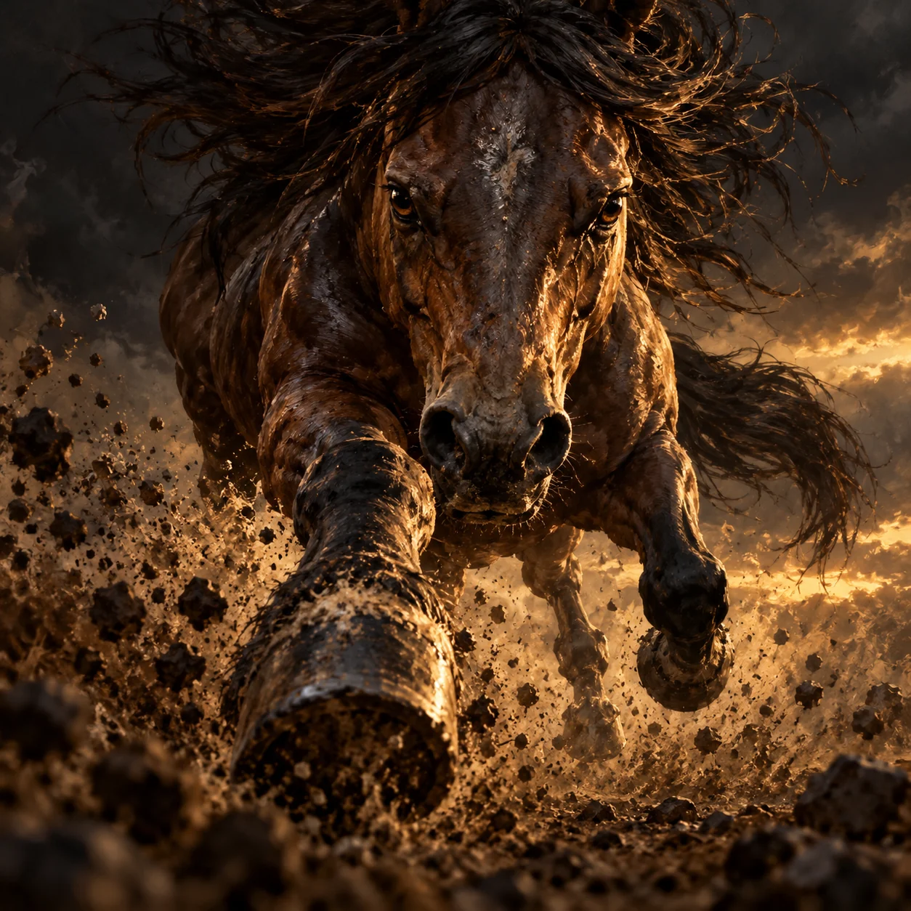
One horse head, two eyes, four horse legs, one mane and one tail; powerful normal horse anatomy, no horns or wings
Aura: Its thousand-li travel ability is suggested only by extreme running momentum: hooves fling dirt backward; no magical trails qianlima-c01
Audit ciri dan sumber
- [object Object]
- [object Object]
Native + 200px inspected. Uji Sangar 1–7 YES locally: imminent foreshortened hoof almost hits lens, intense frontal head/eyes dominate, charging endurance moment with heavy earth clods c01, natural one horse head/four legs/tail, no invented anatomy/giant size/text/glow/IP. Attempt02 answers root ordinary stock horse concern through darker oil brushwork and confronting impact. Root must judge exceptional presence.
Review sumberONE original square premium hand-painted cinematic Mitoloka illustration of Qianlima, the exceptional thousand-li horse [qianlima-c01].
ANATOMY: Exactly one horse head, two eyes, four legs and one tail; no wings, horn or added anatomy. Natural powerful horse anatomy.
MOMENT: Charges THROUGH the viewer’s space at the peak of a furious long-distance gallop, one huge foreshortened forehoof almost striking the lens, head lowered in fierce focused confrontation, eyes sharply fixed on viewer, mane ripped backward. Four legs clearly separated. Visibly an overwhelming racing force, not a graceful horse portrait.
POWER: The documented thousand-li endurance and speed [qianlima-c01] shown as an explosive curtain of soil thrown by hooves, broken motion of foreground stones and wind-whipped mane. No supernatural aura, no rays, no dust tornado or invented magic.
SCALE & CAMERA: Camera inches above the earth immediately in its path, extremely tight frontal composition, forehead and imminent hoof occupy almost whole square; no giant size implied, no small humans for scale.
LIGHT & WEATHER: Extremely low-key dusk, almost black walnut atmosphere, one narrow antique-gold raking side light catching fierce eye, stressed sinew and sharp hoof edge; deep shadows. Thick earthen dust is physically kicked by galloping.
SURFACE: Deliberate painterly brushwork, rough expressive oil-paint texture, sweat, dirt and tangled mane; no photorealistic equestrian stock photo.
SETTING: Unlocated minimal earthen route, editorial only, largely obscured by charging horse.
MOOD: Terrifying imminent impact and mythic endurance, never neutral, graceful, cute or pastoral.
HARD CONSTRAINTS: no text, letters, marks, symbols, inscriptions, logo, frame or watermark; no extra anatomy, no horns or wings, no nude human, no gore, no aura/neon/energy ribbons, no copyrighted design.
Tahoe Tessie
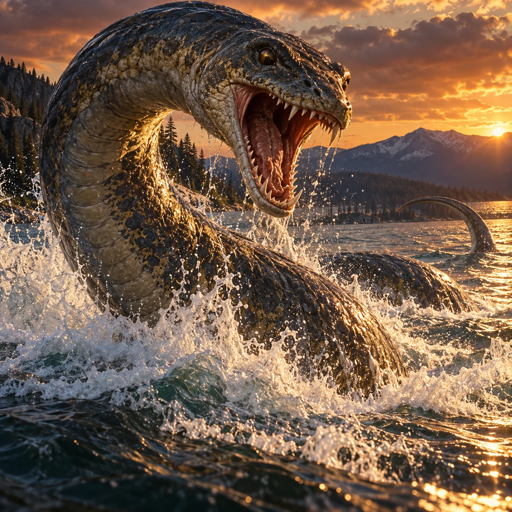
1865 massive serpent-like account, not later friendly mascot or headless hump report.
Aura: No documented supernatural power; large serpent movement displaces Lake Tahoe water into broad heavy splashes tahoe-tessie-c03, tahoe-tessie-c01
Audit ciri dan sumber
- [object Object]
- [object Object]
- [object Object]
Native + 200px inspected. Uji Sangar 1–7 YES: serpent fills frame, confrontational surfacing lunge, splashes derive from c03/c01, one head/zero limbs/one body-tail, no text/glow/IP, dangerous massive serpent rather than landscape or mascot. Chosen 1865 variant only.
Review sumberONE original square premium painterly cinematic Mitoloka illustration of Tahoe Tessie, choosing the 1865 massive serpent-like sighting.
ANATOMY: One massive serpent-like aquatic body, one serpent head, two eyes and one tapering tail; no legs, wings, horns or plesiosaur design [tahoe-tessie-c03]
MOMENT: Bursts toward the close waterline viewer, neck coiling out of the lake and jaw opening; most body fills the square
POWER: No documented supernatural power; large serpent movement displaces Lake Tahoe water into broad heavy splashes [tahoe-tessie-c03, tahoe-tessie-c01]
SCALE & CAMERA: close low camera, subject occupies most of the square, sharp diagnostic anatomy, no unclaimed gigantic size; all required countable features separated and visible.
LIGHT & WEATHER: one dominant warm raking dusk light, deep walnut shadows and antique-gold highlights, high contrast, atmospheric depth without magical glow.
SURFACE: tactile natural skin, fur, feathers, scales or cloth as appropriate, painterly material detail, never plastic.
SETTING: Lake Tahoe at the California–Nevada border [tahoe-tessie-c01]
MOOD: imposing and awe-inspiring or threatening according to documented character, never cute, calm or decorative.
HARD CONSTRAINTS: no text, lettering, pseudo-writing, rune, logo, border, frame or watermark; no extra heads, limbs or fingers; no design borrowed from any film, game, anime or comic; no nudity or explicit gore; no generic glow aura, neon outline or energy ribbons. No decorative symbols or inscriptions.
瞿如
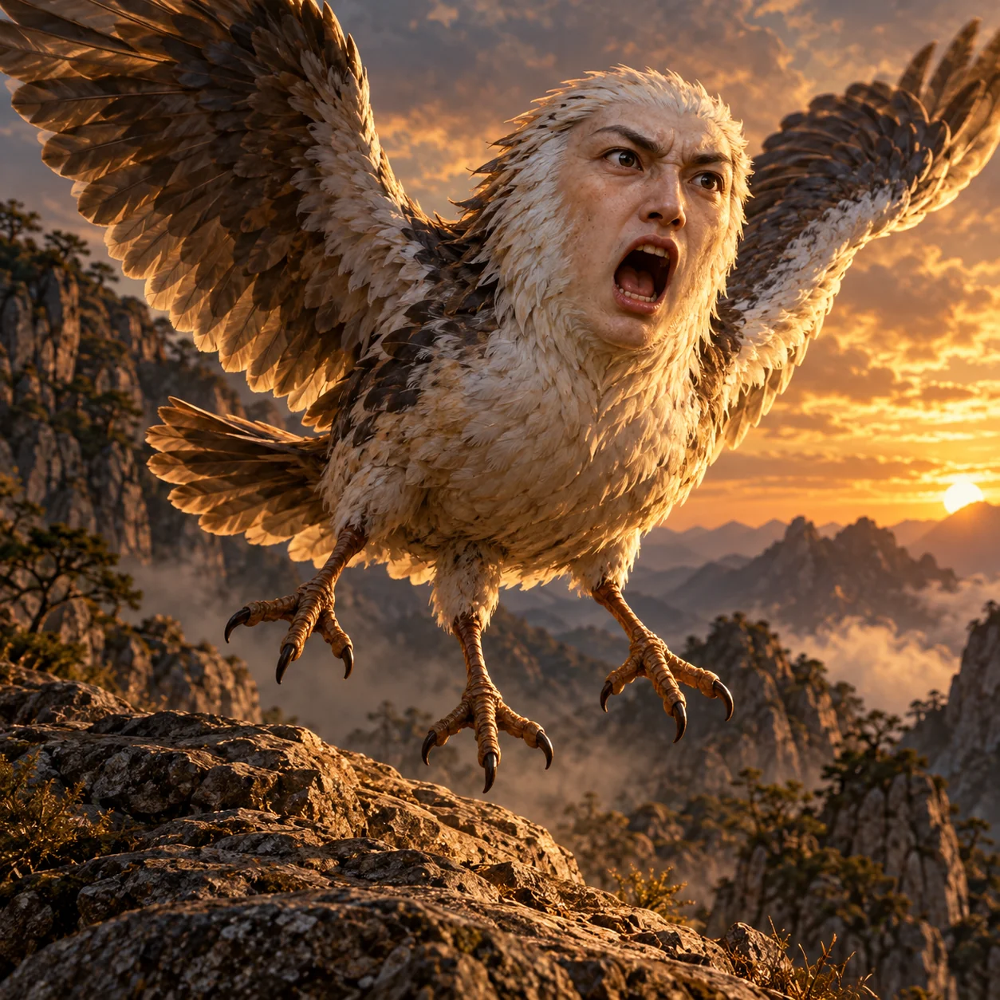
White-headed human-faced Quru with three feet, not the alternate three hands.
Aura: The open human mouth suggests its self-naming call; no written sound and no supernatural effects wd-q22100555-c03
Audit ciri dan sumber
- [object Object]
- [object Object]
- [object Object]
Native + 200px inspected. Uji Sangar 1–7 YES: human face and white head fill frame, launching cry, THREE separated feet/two wings/one tail counted at both sizes, no text/glow/IP. Mountain c04; vocal action c03 only.
Review sumberONE original square premium painterly cinematic Mitoloka illustration of Quru, the human-faced three-footed bird of Mount Daoguo.
ANATOMY: One small duck-like bird body with two wings, white feathered head bearing one HUMAN FACE with two eyes and a human mouth, exactly THREE small avian legs and three feet near the tail, one bird tail; no beak on the human face [wd-q22100555-c01, wd-q22100555-c02, wd-q22100555-c06]
MOMENT: Pushes off a bare rock toward the viewer, wings raised and human mouth open in a cry, all THREE feet stretched apart below body in clear silhouette
POWER: The open human mouth suggests its self-naming call; no written sound and no supernatural effects [wd-q22100555-c03]
SCALE & CAMERA: close low camera, subject occupies most of the square, sharp diagnostic anatomy, no unclaimed gigantic size; all required countable features separated and visible.
LIGHT & WEATHER: one dominant warm raking dusk light, deep walnut shadows and antique-gold highlights, high contrast, atmospheric depth without magical glow.
SURFACE: tactile natural skin, fur, feathers, scales or cloth as appropriate, painterly material detail, never plastic.
SETTING: Mount Daoguo, rocky mountainside [wd-q22100555-c04]
MOOD: imposing and awe-inspiring or threatening according to documented character, never cute, calm or decorative.
HARD CONSTRAINTS: no text, lettering, pseudo-writing, rune, logo, border, frame or watermark; no extra heads, limbs or fingers; no design borrowed from any film, game, anime or comic; no nudity or explicit gore; no generic glow aura, neon outline or energy ribbons. No decorative symbols or inscriptions.
Sirena chilota
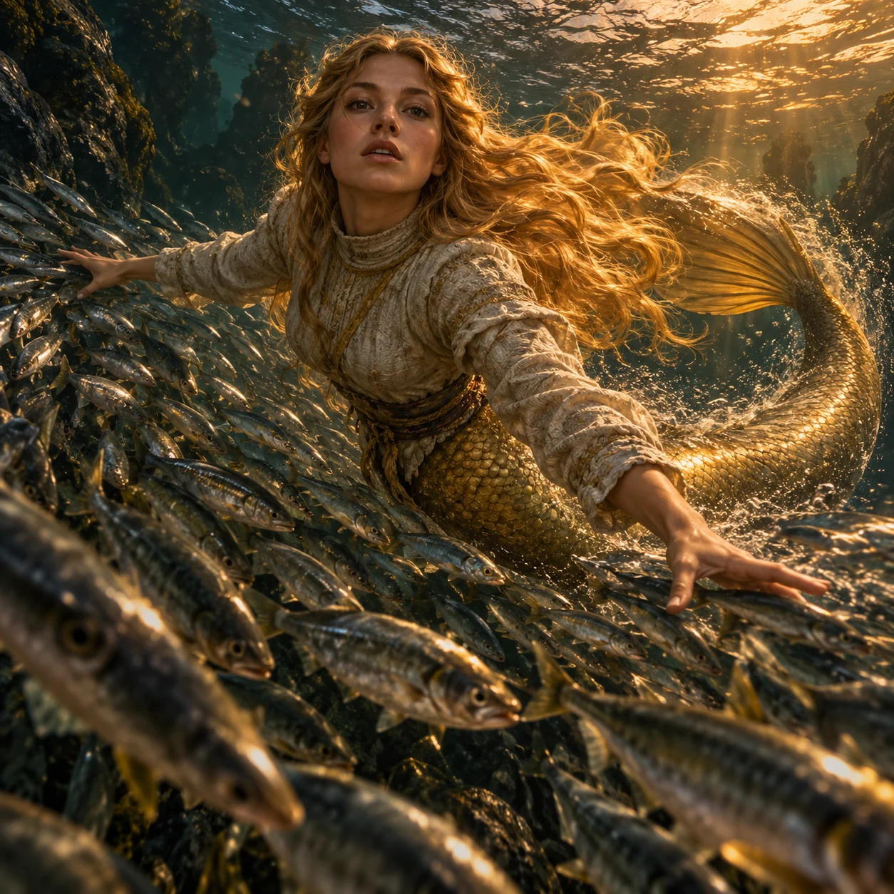
One youthful human female head with long golden-blonde hair, two eyes, two arms and a single golden-scaled fish tail instead of legs; opaque high-neck long-sleeved cloth tunic covers torso fully, no bare chest
Aura: Shepherds fish as charged by Millalobo: a dense school turns around her guiding hands, water disturbed by her tail; no magical glow sirena-chilota-c05, sirena-chilota-c08
Audit ciri dan sumber
- [object Object]
- [object Object]
- [object Object]
Native + 200px inspected. Uji Sangar 1–7 YES: mermaid dominates frame, sweeping fish-herding action c05/c08, long golden hair and golden fish tail c03, two arms/one head/tail, opaque tunic, no text/glow/IP. Awe from a close guardian of a dense fish school, no adolescent sexualization.
Review sumberONE original square premium painterly cinematic Mitoloka illustration of Sirena Chilota, the fish-herding sea maiden of Chiloé.
ANATOMY: One youthful human female head with long golden-blonde hair, two eyes, two arms and a single golden-scaled fish tail instead of legs; opaque high-neck long-sleeved cloth tunic covers torso fully, no bare chest [sirena-chilota-c03, sirena-chilota-c13]
MOMENT: Sweeps both arms through a dense school of fish, turning them toward the foreground; tail bends forcefully and face looks toward viewer with awe and resolve
POWER: Shepherds fish as charged by Millalobo: a dense school turns around her guiding hands, water disturbed by her tail; no magical glow [sirena-chilota-c05, sirena-chilota-c08]
SCALE & CAMERA: close low camera, subject occupies most of the square, sharp diagnostic anatomy, no unclaimed gigantic size; all required countable features separated and visible.
LIGHT & WEATHER: one dominant warm raking dusk light, deep walnut shadows and antique-gold highlights, high contrast, atmospheric depth without magical glow.
SURFACE: tactile natural skin, fur, feathers, scales or cloth as appropriate, painterly material detail, never plastic.
SETTING: Submerged coastal waters near Laitec in Chiloé; dark rocks and the dim underside of the sea surface [sirena-chilota-c07]
MOOD: imposing and awe-inspiring or threatening according to documented character, never cute, calm or decorative.
HARD CONSTRAINTS: no text, lettering, pseudo-writing, rune, logo, border, frame or watermark; no extra heads, limbs or fingers; no design borrowed from any film, game, anime or comic; no nudity or explicit gore; no generic glow aura, neon outline or energy ribbons. No decorative symbols or inscriptions.
Merperson in Southsea
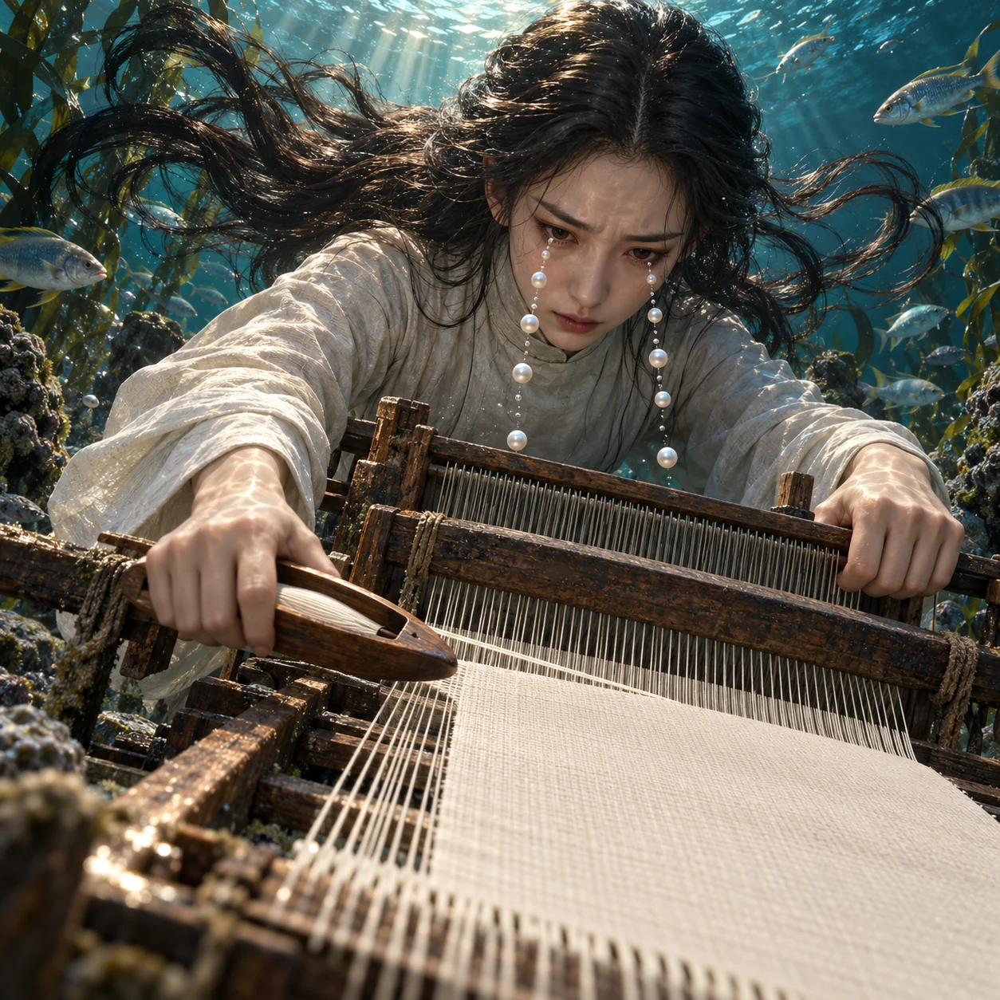
Human upper form of Jiaoren actively weaving dry jiao cloth at a fully submerged seafloor loom, pearl tears sinking from both eyes; undescribed lower anatomy hidden.
Aura: Awe comes from sustained underwater textile-making c05/c07, jiao cloth that stays dry c04/c06, and pearl tears c03/c07; no generic supernatural aura.
Audit ciri dan sumber
- [object Object]
- [object Object]
- [object Object]
- [object Object]
Native and 200px inspected; all seven Sangar checks YES. Fully underwater human upper form dominates; exactly one head/two eyes/two arms and two ordinary five-digit hands, full opaque high-neck sleeves, lower anatomy hidden behind loom. Left hand actively holds shuttle at warp, right hand pulls beater; distinct straight matte dry cloth, streaming hair and surrounding fish/current show impossible submerged textile-making. Separate pearl tears sink from both eyes. No invented tail/fin ears/gills/jewellery, text, aura, gore or ordinary shoreline portrait.
Review sumberONE original square premium painterly cinematic Mitoloka illustration of Jiaoren, the pearl-weeping South Sea being who dwells underwater like a fish and never stops weaving water-resistant jiao cloth.
ANATOMY: exactly ONE human-shaped upper figure with one head, two eyes, two normal rounded human ears, two arms and two normal five-fingered hands; wear fully OPAQUE plain high-neck long-sleeve robe covering shoulders, chest and torso; lower anatomy hidden entirely behind loom and opaque clothing, NO fish tail, fin ears, gills, scales, jewellery or invented aquatic anatomy [merperson-in-southsea-c01, merperson-in-southsea-c05, merperson-in-southsea-c07]
MOMENT: weave forcefully toward the viewer at a working WOODEN LOOM fixed on the seafloor, left hand drives a wooden shuttle through separate vertical warp threads, right hand pulls the wooden beater across the fresh weft; body leans forward in decisive work, face looks down toward the viewer with intense solemn eyes. Long loose hair streams sideways in the underwater current. Three or four clearly SEPARATE pearls fall freely from each eye and sink beside the loom, NOT attached jewellery or pearl strings.
POWER: tears become solid natural white pearls that visibly sink from both eyes, and a broad panel of freshly woven jiao silk remains impossibly DRY, MATTE, FLAT, STRAIGHT and UNRUFFLED on the loom despite surrounding moving seawater. Show a dry fine weave, crisp edge and ruler-straight fringe against streaming hair and freely swimming fish; NO enclosing air pocket, magic aura or glow [merperson-in-southsea-c03, merperson-in-southsea-c04, merperson-in-southsea-c05, merperson-in-southsea-c06, merperson-in-southsea-c07]
SCALE & CAMERA: extreme low angle from the seafloor; close waist-up three-quarter view, figure fills upper two-thirds, working hands, shuttle, warp threads and broad dry woven cloth fill lower foreground; pearls and active loom must be readable at 200 pixels, no giant scale.
LIGHT & WEATHER: one natural warm sunlight shaft filtered down through deep teal seawater, strong rim light and deep shadows; suspended silt and water-current flow around hair, ordinary small fish and kelp.
SURFACE: dark streaming hair, natural human face, matte dry ivory jiao cloth with clear straight weave, rough soaked wooden loom, gritty seabed stones, ordinary reflective pearl surfaces, no glow.
SETTING: FULLY UNDERWATER on the SOUTH SEA FLOOR; seawater surrounds the head and loom in every direction; several ordinary fish swim beside her face and behind the warp, kelp bends sideways, seafloor stones below; NO shore, horizon, open-air sky, surface portrait, air bubble or palace [merperson-in-southsea-c01, merperson-in-southsea-c05, merperson-in-southsea-c07]
MOOD: awe-inspiring impossible underwater artisan at a charged moment of weaving; imposing and uncanny, never an ordinary crying shoreline woman, cute, calm or decorative; respectful Chinese myth.
HARD CONSTRAINTS: no text, lettering, logo, border, frame or watermark; no extra heads, limbs or fingers; no design borrowed from any film, game, anime or comic; no nudity or explicit gore; no generic glow aura, neon outline or energy ribbons. No fish tail, fins, webbed ears, scales, gills, horns, jewellery, tattoos or glyphs. Dry cloth MUST remain straight and flat while hair and surrounding fish move. The loom MUST show active shuttle-and-beater weaving, not merely holding a cloth.
Momo the Monster
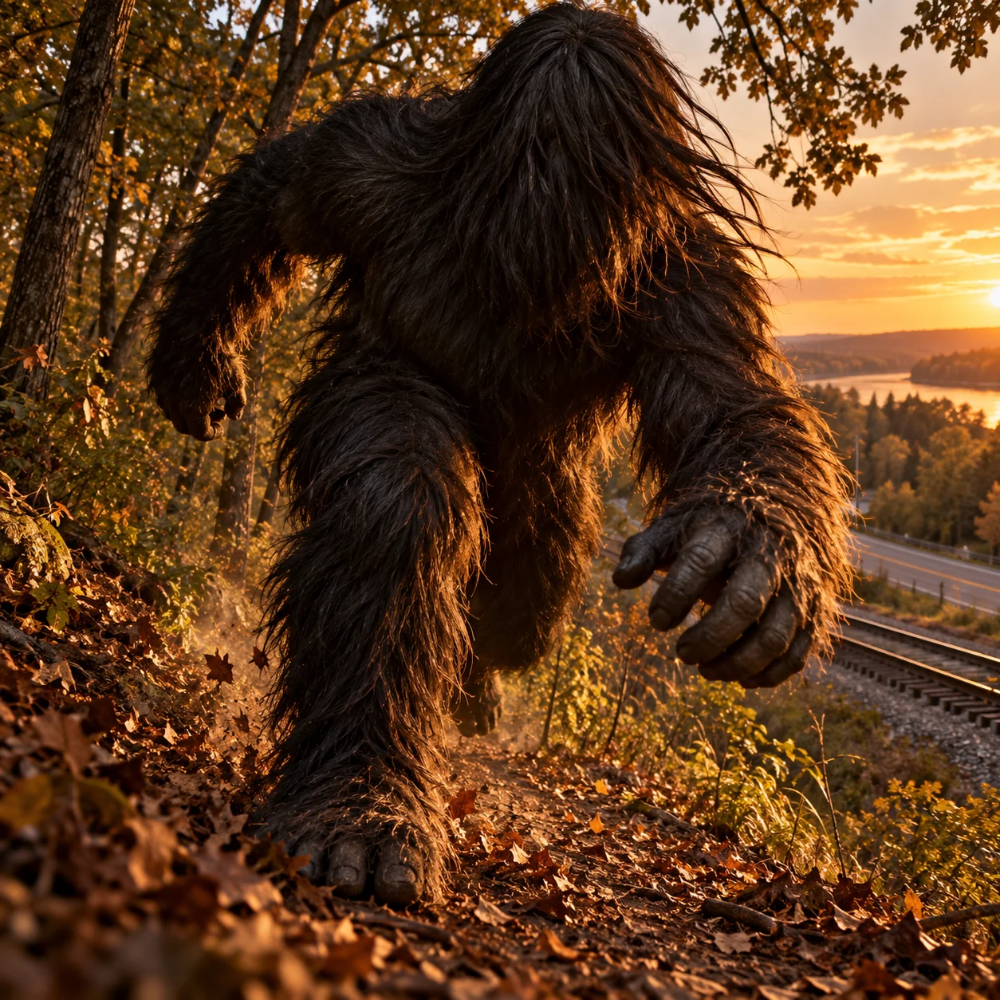
One large bipedal ape-like humanoid about seven feet tall, two arms, two legs; black body hair covers its face and hides neck, no bare human face, no visible glow or added teeth
Aura: Rapid escape into woodland, only footfalls lifting leaf litter; no supernatural effects; no dead animal and no blood momo-the-monster-c08
Audit ciri dan sumber
- [object Object]
- [object Object]
- [object Object]
Native + 200px inspected. Uji Sangar 1–7 YES: large dark humanoid dominates frame, forward dash and reaching hand, 2 arms/2 legs/one hair-hidden head with no visible neck c05/c06, leaf litter only c08 woodland escape, no text/glow/gore/IP, unmistakable cryptid rather than ordinary person.
Review sumberONE original square premium painterly cinematic Mitoloka illustration of Momo the Monster, the black-haired Missouri humanoid.
ANATOMY: One large bipedal ape-like humanoid about seven feet tall, two arms, two legs; black body hair covers its face and hides neck, no bare human face, no visible glow or added teeth [momo-the-monster-c01, momo-the-monster-c02, momo-the-monster-c05, momo-the-monster-c06]
MOMENT: Dashes diagonally across a woodland path and turns its hair-hidden face toward the viewer, front hand thrust forward, black hair swinging
POWER: Rapid escape into woodland, only footfalls lifting leaf litter; no supernatural effects; no dead animal and no blood [momo-the-monster-c08]
SCALE & CAMERA: close low camera, subject occupies most of the square, sharp diagnostic anatomy, no unclaimed gigantic size; all required countable features separated and visible.
LIGHT & WEATHER: one dominant warm raking dusk light, deep walnut shadows and antique-gold highlights, high contrast, atmospheric depth without magical glow.
SURFACE: tactile natural skin, fur, feathers, scales or cloth as appropriate, painterly material detail, never plastic.
SETTING: Woodland at rural Louisiana, Missouri, close to a road and railroad tracks [momo-the-monster-c08]
MOOD: imposing and awe-inspiring or threatening according to documented character, never cute, calm or decorative.
HARD CONSTRAINTS: no text, lettering, pseudo-writing, rune, logo, border, frame or watermark; no extra heads, limbs or fingers; no design borrowed from any film, game, anime or comic; no nudity or explicit gore; no generic glow aura, neon outline or energy ribbons. No decorative symbols or inscriptions.
Monachicchio
Menunggu gambar yang lolos audit
旋龜
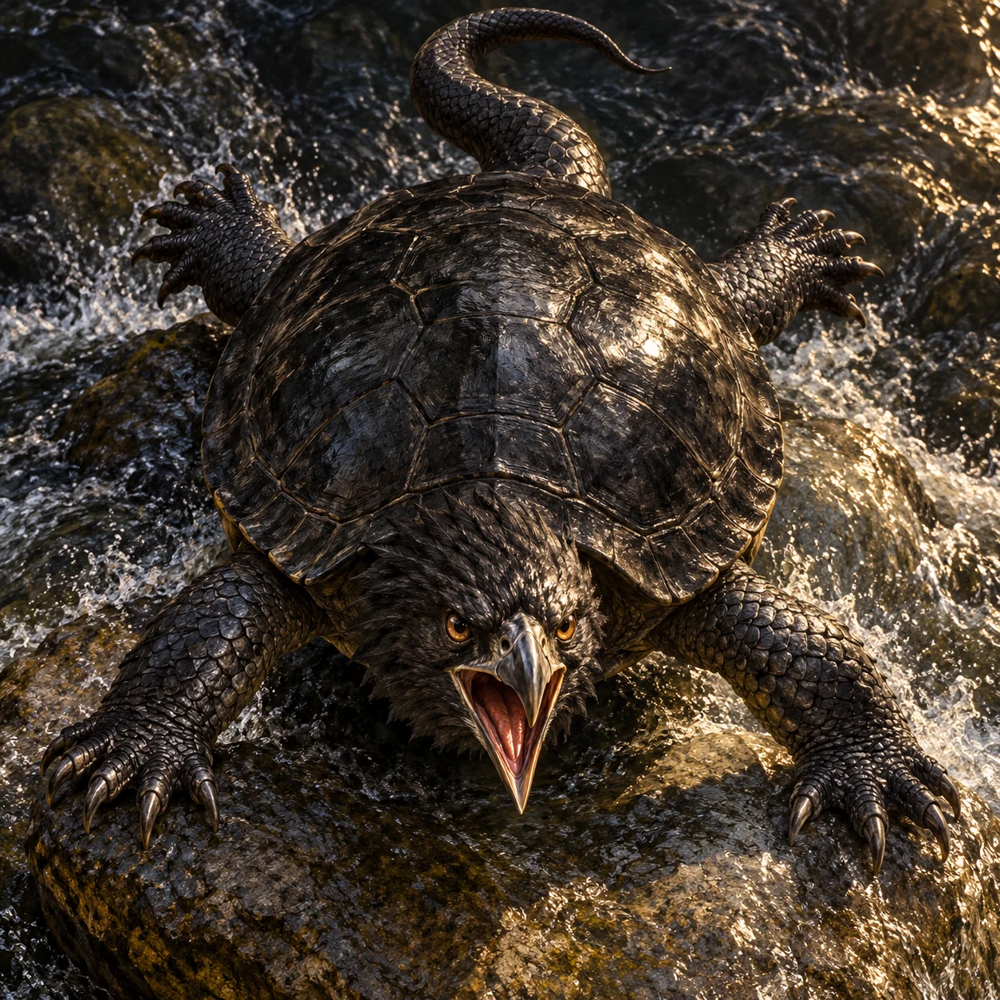
One black turtle body and shell, exactly FOUR turtle legs and FOUR feet, one BIRD HEAD with beak and two eyes, one long tapering SNAKE TAIL with no head on the tail; head, all feet and tail simultaneously visible
Aura: No visible magic; shallow river water splashes from its moving turtle feet; sound is suggested by open beak, no actual splintered wood wd-q10309898-c03, wd-q10309898-c07
Audit ciri dan sumber
- [object Object]
- [object Object]
- [object Object]
Native + 200px inspected. Uji Sangar 1–7 YES: frame-filled black turtle hybrid, forward crawl/open crying beak, one bird head/two eyes/FOUR fully exposed turtle feet/one snake tail counted at native and 200px, river spray c05 only, no actual timber-splitting or healing aura, no text/glow/IP. Attempt03 overhead resolves prior hidden fourth foot.
Review sumberONE original square premium painterly cinematic Mitoloka illustration of Xuangui, the BLACK turtle with BIRD HEAD and SNAKE TAIL [wd-q10309898-c01, wd-q10309898-c02, wd-q10309898-c07].
ANATOMY MUST BE READABLE: One black round turtle shell at CENTER of image. EXACTLY FOUR turtle limbs attached to shell, spread OUTSIDE shell silhouette like a broad X: front-left foot lower left, front-right foot lower right, rear-left foot upper left, rear-right foot upper right. All FOUR feet are completely visible with exposed toes and separated from head/tail/each other. One bird head with beak and two bird eyes extends from shell toward lower center; one tapering snake tail extends from shell toward upper center and curls away, no tail head. No extra limbs or wings. Each limb clear at thumbnail.
MOMENT: lunges across a flat wet river stone toward the viewer, all four limbs stretched outward and shell lifted so no foot can be hidden; bird beak opens in a sharp cry. Head lifted to confront the lens.
POWER: Only shallow river spray below rock, not over feet; wood-splitting sound suggested by open beak [wd-q10309898-c03]. No supernatural effects.
SCALE & CAMERA: DIRECTLY ABOVE with slight forward tilt, looking DOWN at full body; this overhead view is required so BOTH rear feet are clearly visible beside shell. Close large creature dominates square, no invented giant size. Shape resembles a turtle viewed from above, not side view.
LIGHT & WEATHER: Deep dark river, narrow warm raking late light; high contrast and dramatic shadows, not bright nature photography.
SURFACE: Heavy oil painting brushwork, black wet shell, scaled legs and snake tail, tactile black bird feathers.
SETTING: Guai water of Mount Niuyang [wd-q10309898-c04, wd-q10309898-c05].
MOOD: imposing uncanny hybrid confronting camera, never cute or placid.
HARD CONSTRAINTS: No text, marks, symbols, inscriptions, logos or frames, no extra anatomy, no nudity/gore, no aura/neon/rays, no borrowed design. Reject any composition showing only three feet.
貍力
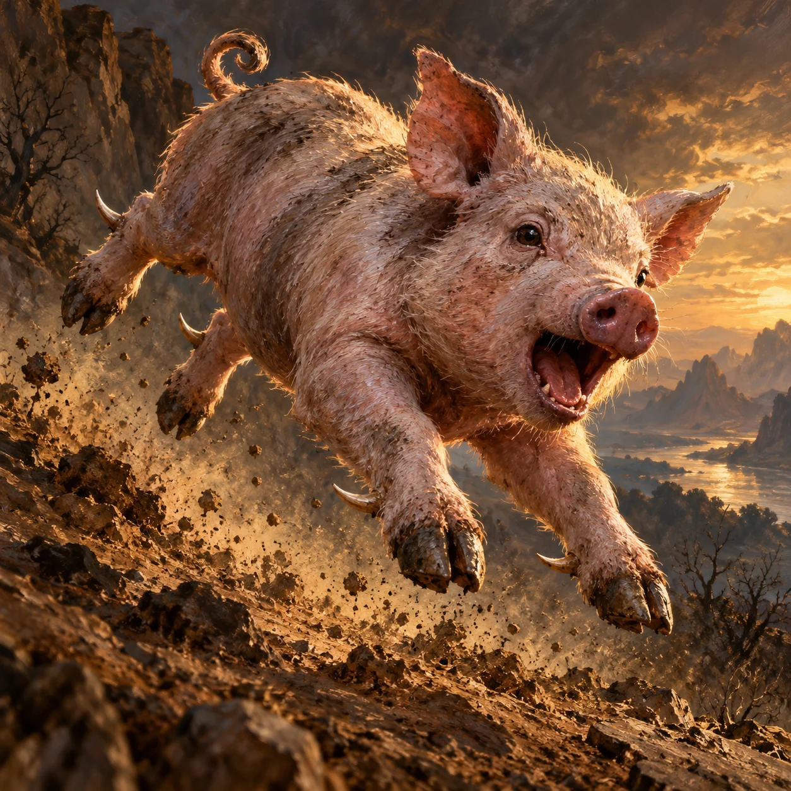
One piglet-shaped animal, one pig head with two eyes and snout, four legs; each foot has a conspicuous rear-pointing elevated spur like a chicken foot; no chicken head or added wings
Aura: Only dirt disturbed by running feet; construction-omen c04 is not turned into earth-moving magic, doglike bark suggested by open mouth wd-q10409490-c03, wd-q10409490-c04
Audit ciri dan sumber
- [object Object]
- [object Object]
- [object Object]
Native + 200px inspected. Uji Sangar 1–7 YES: piglet-like beast fills frame in confronting bound and open barking mouth, FOUR feet/one curly tail/one head verified, each ankle has SINGLE backward-pointing spur c02/c07 visible at 200px, dust only hoof movement not magic, no text/glow/IP; diagnostic spurs distinguish it from ordinary farm pig.
Review sumberONE square original premium painterly cinematic Mitoloka illustration of Lili, the PIGLET-LIKE animal with rear foot spurs in the Shan Hai Jing.
ANATOMY: ONE piglet-shaped body, ONE pig head with normal pig snout, TWO eyes, FOUR legs with FOUR cloven hoof feet, ONE curly pig tail. At the BACK of each hoof ankle sits ONE raised, backward-pointing CHICKEN-LIKE SPUR. Single rear spur each, NOT two sideways horns or tusks on each foot. FOUR limbs spread clearly apart outside body contour: two front legs below snout, two hind legs behind belly, all four feet visible. No dog head/teeth, giant tusks, wings or extra limbs [wd-q10409490-c01, wd-q10409490-c02, wd-q10409490-c07].
MOMENT: Springs diagonally down a bare earth ledge toward the viewer in an active bounding leap, little body suspended and FOUR legs thrown apart, both rear legs fully outside body silhouette, muzzle opens in a barklike cry [wd-q10409490-c03].
POWER: Real earth crumbs kicked up by feet, no magic. Construction omen is not shown as earth-control power [wd-q10409490-c04].
SCALE & CAMERA: Slightly raised THREE-QUARTER SIDE view looking at the creature diagonally; piglet fills almost entire square, both flank and snout visible, four legs clearly separate at 200px. No hidden far hind leg, no invented giant size.
LIGHT & WEATHER: Dark walnut background, single warm raking late sunlight, deep contrast, leafless plain slope, no bright stock-animal photography.
SURFACE: Painterly rough oil brushwork, damp bristles, dirt at cloven hooves, horn-textured rear spurs.
SETTING: Earth slope of Mount Gui with Ying water distant [wd-q10409490-c05, wd-q10409490-c08].
MOOD: Uncanny spurred animal in confronting leap, not a calm farm pig, cute piglet or monster dog.
HARD CONSTRAINTS: No text/lettering/runes/symbols/logos/border/watermark, no extra heads/limbs, no nudity/gore, no glow/aura/neon/energy; no copied IP. All four feet need visible single rear spur.
羅羅
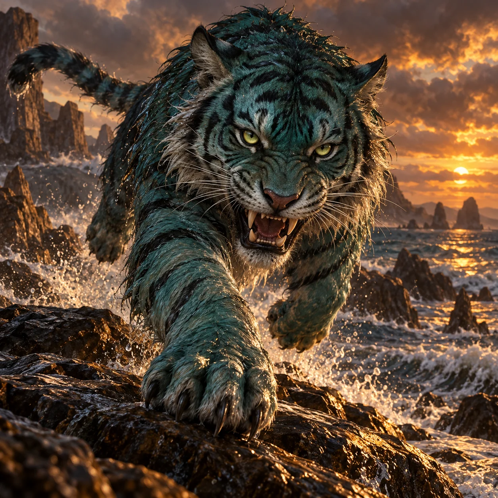
Blue-green tiger-like Luoluo from c06/c07; not the same-named poorly described human-eating bird.
Aura: No documented supernatural power; menace comes from the tiger-like anatomy and active leap alone wd-q10478981-c06, wd-q10478981-c07
Audit ciri dan sumber
- [object Object]
- [object Object]
Native + 200px inspected. Uji Sangar 1–7 YES: teal blue-green tiger-like Luoluo dominates and lunges forward, forepaw and teeth confront viewer, natural feline body/one head/2 eyes/tail with rear limbs naturally occluded; sea-shore spray habitat only c06, no supernatural aura, no text/IP. Chooses c06/c07 beast; no man-eating power imported from same-name bird.
Review sumberONE original square premium painterly cinematic Mitoloka illustration of Luoluo, choosing the blue-green tiger-like beast of the Overseas North account.
ANATOMY: One BLUE-GREEN tiger-like beast, one feline head, two eyes, four feline legs and one tail; wet dark teal fur with tiger stripes; no bird wings or hybrid bird anatomy [wd-q10478981-c06, wd-q10478981-c07]
MOMENT: Bounds toward the viewer over a low dark rock, one forepaw reaching close, muzzle snarling
POWER: No documented supernatural power; menace comes from the tiger-like anatomy and active leap alone []
SCALE & CAMERA: close low camera, subject occupies most of the square, sharp diagnostic anatomy, no unclaimed gigantic size; all required countable features separated and visible.
LIGHT & WEATHER: one dominant warm raking dusk light, deep walnut shadows and antique-gold highlights, high contrast, atmospheric depth without magical glow.
SURFACE: tactile natural skin, fur, feathers, scales or cloth as appropriate, painterly material detail, never plastic.
SETTING: A shore within the North Sea of the cited Overseas North passage [wd-q10478981-c06]
MOOD: imposing and awe-inspiring or threatening according to documented character, never cute, calm or decorative.
HARD CONSTRAINTS: no text, lettering, pseudo-writing, rune, logo, border, frame or watermark; no extra heads, limbs or fingers; no design borrowed from any film, game, anime or comic; no nudity or explicit gore; no generic glow aura, neon outline or energy ribbons. No decorative symbols or inscriptions.
Mich
Menunggu gambar yang lolos audit
Sharlie
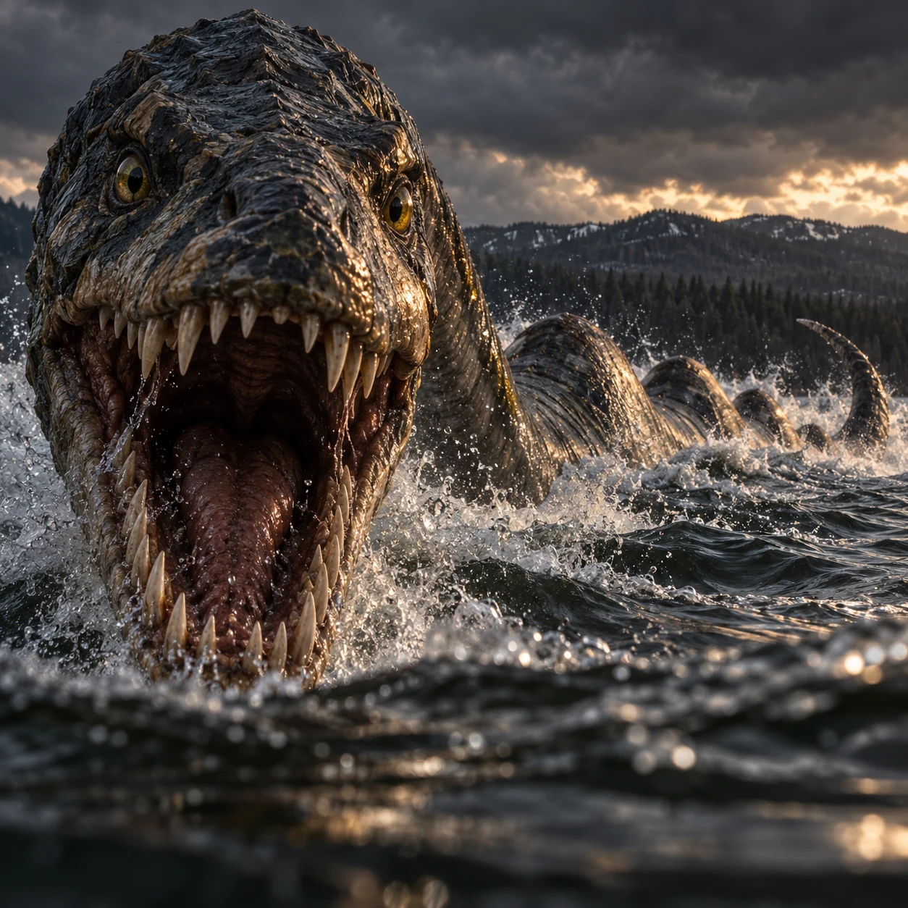
The 1944 dinosaur-headed camel-humped shell-skinned reported form.
Aura: No documented supernatural power; long body produces churning displaced lake water sharlie-c04
Audit ciri dan sumber
- [object Object]
- [object Object]
- [object Object]
Native + 200px inspected. Uji Sangar 1–7 YES: dinosaur-like open jaws dominate, surge toward waterline camera, shell-like skin/camel-like humps/one tail c04 readable, one head/zero limbs, displaced lake water only c01/c04, no text/glow/IP, imposing rather than placid. Attempt02 solves quiet pose.
Review sumberONE original square premium painterly cinematic Mitoloka illustration of Sharlie, the 1944 Payette Lake serpent.
ANATOMY: One thirty-to-thirty-five-foot sea-serpent body, one DINOSAUR-LIKE head with two eyes, several CAMEL-LIKE humps along its back, hard SHELL-LIKE textured skin and one tail; no legs or wings [sharlie-c01, sharlie-c04]
MOMENT: LUNGES its dinosaur-like head directly toward the waterline lens, head occupying sixty percent of image, JAW WIDE OPEN with natural sharp reptile teeth, eyes intensely fixed on viewer; body surges violently behind with clear camel-like humps, a massive curtain of displaced lake water; never closed-mouth placid neck pose
POWER: No documented supernatural power; long body produces churning displaced lake water [sharlie-c04]
SCALE & CAMERA: camera AT WATERLINE inches ahead of the open jaws, violent foreshortened confronting head; sharp diagnostic anatomy, no unclaimed gigantic size; all required countable features separated and visible.
LIGHT & WEATHER: extremely low-key overcast late light, narrow warm side rim over deep black-walnut shadows, strong contrast, no bright orange postcard sunset; physical water spray only.
SURFACE: tactile natural skin, fur, feathers, scales or cloth as appropriate, painterly material detail, never plastic.
SETTING: Payette Lake near McCall, Idaho [sharlie-c01]
MOOD: imposing and awe-inspiring or threatening according to documented character, never cute, calm or decorative.
HARD CONSTRAINTS: no text, lettering, pseudo-writing, rune, logo, border, frame or watermark; no extra heads, limbs or fingers; no design borrowed from any film, game, anime or comic; no nudity or explicit gore; no generic glow aura, neon outline or energy ribbons. No decorative symbols or inscriptions.
Sisimito
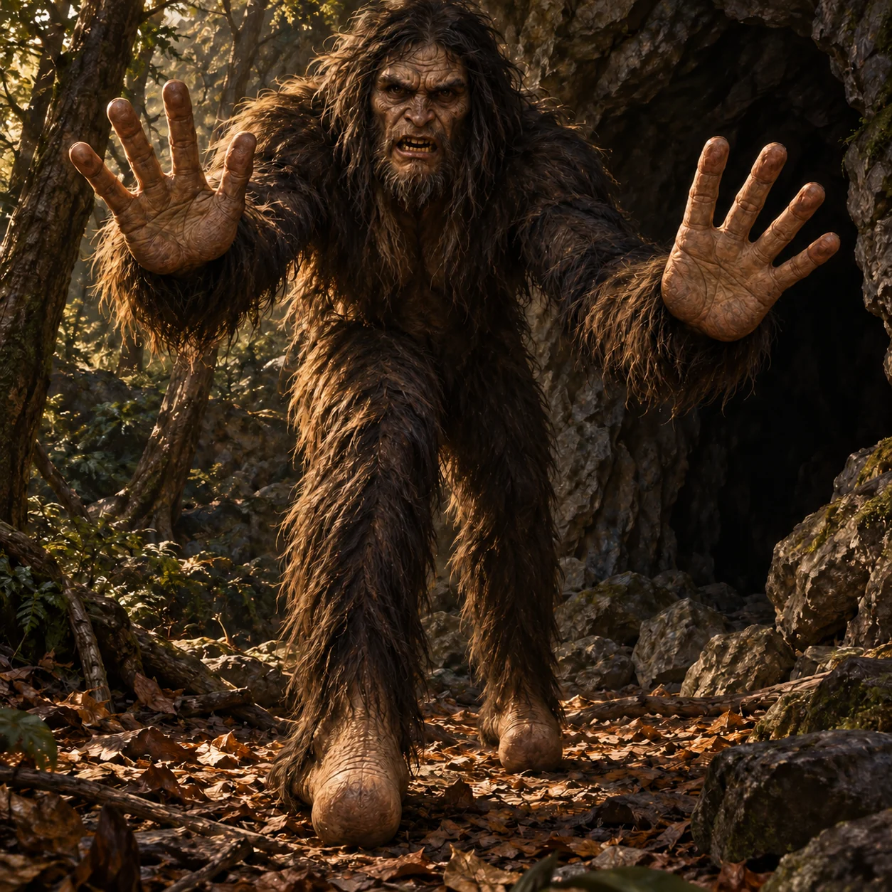
One upright gorilla-like creature with a HUMAN-LIKE HEAD, two eyes, long body hair, two arms and two straight knee-less legs; each of its TWO OPEN HANDS has exactly FOUR LONG FINGERS and NO THUMB; BOTH FEET point BACKWARDS with toes behind the body and heels toward the viewer. Show full body in three-quarter front view, both palms fully readable and both reversed feet clearly uncovered
Aura: No visible supernatural effect; confrontation follows its fierce human-threatening character; loose leaves at feet only sisimito-c10
Audit ciri dan sumber
- [object Object]
- [object Object]
- [object Object]
Native + 200px inspected. Uji Sangar 1–7 YES: frame-dominating threatening human-headed long-haired ape form, reaching moment; BOTH hands now have FOUR long fingertips and ZERO thumb with smooth palm edge, BOTH heels face forward while feet extend backwards behind calves, straight kneeless legs c03; cave/forest c09 and leaves only, no text/glow/IP. Third targeted built-in edit resolves remaining right thumb; no further call available.
Review sumberEdit this original Sisimito illustration with one precise anatomical correction. Keep the entire composition, one humanlike face, long dark body hair, two arms, straight kneeless two legs, both backwards-pointing feet with forward rounded heels, cave forest, brown-gold cinematic light, oil brushwork and active confrontation unchanged.
CRITICAL CORRECTION [sisimito-c03]: On the hand at VIEWER RIGHT, remove the small side THUMB that projects from the LEFT edge of that palm (nearest the torso). That hand currently has five digits; after removing that side thumb it must have EXACTLY FOUR LONG FINGERS TOTAL, the four long fingers already extending upward/right from the top edge of palm. Smooth the now thumbless left side of palm seamlessly, with no stump or short nub. Four fingertips only. The hand at VIEWER LEFT already has FOUR total digits; preserve that hand exactly. Both hands are THUMBLESS four-fingered hands. Do not add a new thumb or finger anywhere.
BOTH reversed feet must retain forward-facing heels and toes facing behind the calves [sisimito-c03]. Preserve visible feet, do not invent normal forward toes. All other anatomy and physical leaf litter unchanged [sisimito-c01, sisimito-c09, sisimito-c10].
No added power, glow, aura, symbols, pseudo-writing, text, watermark, border, gore, nudity, extra limbs or copied design. One square premium painterly final image; no inset or before/after.
猼訑
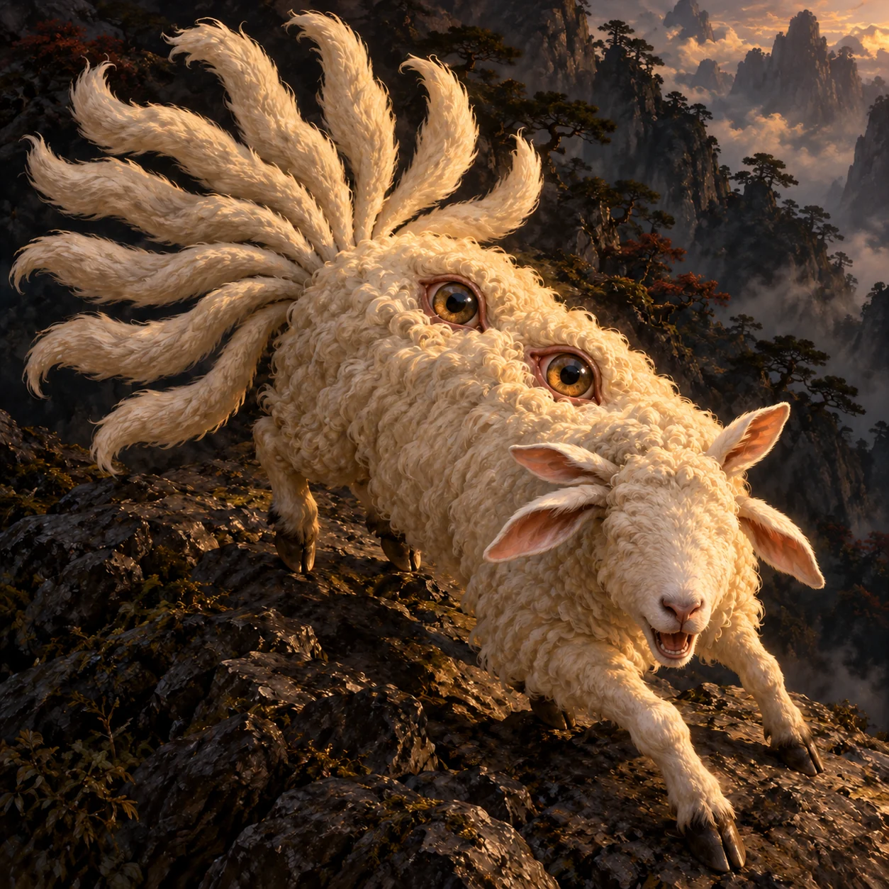
One sheep-like body with one head, FOUR EARS separated in two pairs, exactly FOUR sheep legs, exactly NINE long distinct tails fanned apart at the rump, exactly TWO EYES ON ITS BACK and ZERO eyes on its face. Hair parted around the two dorsal eyes. No horns added
Aura: No visible magic; legendary fear-dispelling hide is not represented as an aura, action and strange anatomy only wd-q10410143-c03
Audit ciri dan sumber
- [object Object]
- [object Object]
- [object Object]
Native + 200px inspected. Uji Sangar 1–7 YES: sheep-like Boyi dominates in forward twisting bound, uncanny TWO large biological eyes on BACK stare up at viewer, ZERO facial eyes; EXACT NINE tails with distinct tips counted along fan and FOUR ears (two per side), four sheep legs/one head/no horns. No magic from fear-dispelling-hide belief, dark Mount Ji habitat c04/c05, no text/glow/IP. Attempt02 removes fifth ear while preserving other anatomy.
Review sumberEdit this original Boyi illustration with ONE precise anatomy correction, preserving its threatening forward bounding moment, square cinematic oil-paint composition, natural sheep-shaped body, FOUR legs, EXACTLY NINE individually separated tails, TWO EYES ON BACK and ZERO facial eyes, dark Mount Ji rocks and raking golden low light [wd-q10410143-c01, wd-q10410143-c02, wd-q10410143-c04, wd-q10410143-c05, wd-q10410143-c07].
CRITICAL EAR CORRECTION: It currently has FIVE ears: TWO on the viewer-left side of the head and THREE on the viewer-right side. REMOVE ONLY the MIDDLE horizontal ear at VIEWER RIGHT (the long ear projecting horizontally to the right, between the upper diagonal ear and the lower diagonal ear). Fill that removed ear’s area seamlessly with background or normal head wool as appropriate. Preserve the upper and lower ears on viewer-right and both existing ears on viewer-left. Final count exactly FOUR ears, TWO on each side, all four exposed and clearly visible. No ear stump, nub or extra fifth ear.
TAILS INVARIANT: Preserve ALL NINE tails with nine separate tips; do not remove, merge, add or hide a tail. BACK EYES invariant: retain BOTH large biological eyes on the torso BACK, no facial eyes added. NO horns. All diagnostic features readable at 200 pixels. Sheep mouth remains open in active forward bound, never static/cute.
No power effects added; fear-dispelling hide is not aura [wd-q10410143-c03]. No text, numerals, labels, pseudo-writing, symbols, watermark, border, extra anatomy, glowing aura/neon, nudity/gore or borrowed design. One final square image, no before/after panel.
Knochenfund von Seweckenberge
Menunggu gambar yang lolos audit
Kompira
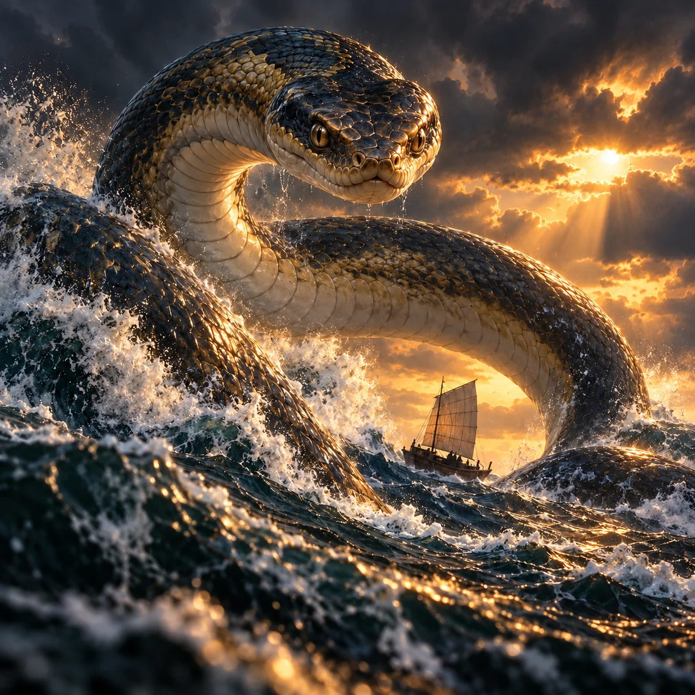
Rural serpent-kami worship c10, not iconographic crocodile/dragon-human conflation.
Aura: Protective serpent-kami presence (kompira-c10), maritime guardian composition around a merchant vessel (kompira-c02, kompira-c07, kompira-c12); no magical aura or lightning.
Audit ciri dan sumber
- [object Object]
- [object Object]
- [object Object]
Viewed the original 1254x1254 PNG and saved 200x200 thumbnail. Sangar test all seven yes: dominant living serpent and commanding forward head; awe remains at 200px; rising guardian coil physically displaces foaming sea; no invented power effects, lightning removed completely and cloudbreak is natural sunset; exactly one head/two eyes/no arms or legs, no horns/wings/whiskers; no visible text/watermark/frame or borrowed franchise design; sacred monumental presence around a merchant vessel avoids ordinary wildlife or empty landscape. Serpent variant kompira-c10, maritime protective motif kompira-c02/c07/c12. Scale is expressly editorial religious allegory, not a sourced giant dimension. Root Codex also inspected native and 200px: natural cropping and recorded editorial choices do not constitute a failed anatomy check; all seven checks pass. Composition caveats retained verbatim in artistic_choices and worker review archive.
Review sumberONE original square premium painterly cinematic Mitoloka illustration of Konpira, in the documented rural serpent-kami variant. EDIT the provided original image, preserving its serpent, maritime composition, boat and physical sea spray; change only the unsupported lightning and its illumination into warm light from a natural narrow sunset cloudbreak. Remove every lightning branch and electrical streak completely.
ANATOMY: Exactly one serpent head, two eyes, one continuous thick serpentine body, one tapering tail; zero limbs, horns, wings, whiskers or human anatomy. Keep the dignified commanding snake face and living wet scales [kompira-c10].
MOMENT: The living serpent rises toward the viewer in a commanding protective coil, watching over the small merchant sailboat passing within its shelter. Keep physical splashes from its body moving through the rough sea; awe and active guardian presence, no attack on the boat.
POWER: Protective maritime kami identity [kompira-c02, kompira-c07, kompira-c12]. No invented supernatural effect. Waves and spray are natural weather and bodily displacement, not magically lifted or controlled water. The thunder-kami association does not authorize lightning generation: no lightning anywhere.
SCALE & CAMERA: Extreme low waterline view; sacred serpent fills almost the square, head dominant near the upper center, tiny merchant vessel beneath its protective curve. Monumental size is expressly an editorial religious allegory under project guideline §6.5, not a sourced statement of literal body size.
LIGHT & WEATHER: One dominant narrow warm sunset cloudbreak in the distant heavy clouds instead of the lightning, antique-gold rim on wet scales, deep walnut shadows, realistic white sea spray. No lightning bolt, branching lightning, electrical sparks, luminous markings or generic glow.
SURFACE: Wet tactile black-gold natural serpent scales, cream belly plates, painterly physical water foam and old dark wooden vessel.
SETTING: Maritime waters, contextualizing the god of merchant sailors and guardian of safe sea travel [kompira-c02, kompira-c07, kompira-c12].
MOOD: Sacred, imposing, awe-inspiring, dignified and protective; never demonic, cute, calm or decorative.
HARD CONSTRAINTS: no text, lettering, symbols, logo, border, frame or watermark; no extra heads, limbs or tails; no jewellery, crowns, armour, costumes, dragon anatomy; no film, game, anime or comic design; no nudity or explicit gore; no generic glow aura, neon outline, energy ribbons or lightning. Preserve the original serpent anatomy and boat composition.
Lagahoo
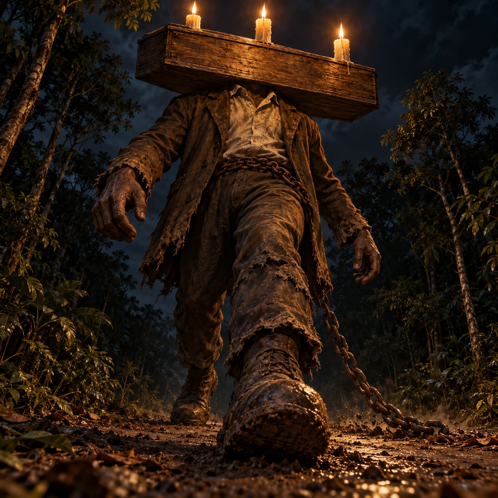
Headless giant human male with one wooden coffin on his neck, exactly three lit candles, two arms, two legs and a trailing iron chain tied at the waist.
Aura: Threat from headless coffin-bearing anatomy and three real candle flames (lagahoo-c02/c03), gigantic stature and advancing presence (lagahoo-c05/c11), without magical glow.
Audit ciri dan sumber
- [object Object]
- [object Object]
- [object Object]
Inspected original native 1254×1254 PNG and independently viewed 200×200 thumbnail.,Sangar 1–7: yes. Figure fills frame, menace remains clear at 200px, foreground boot advances into viewer path, three candle flames and chain dragging are claim-grounded physical effects, diagnostic anatomy matches, no text/watermark/framing/borrowed design, and subject does not read as an ordinary person.,Counts verified: one body; zero heads/faces/eyes; two arms/hands; two legs/feet; one coffin resting directly above collar at neck, not hand-carried; exactly three separate candles/flames; one waist chain trailing into road.,Unmarked wood, fully opaque worn clothing and shoes, no exposed neck wound or gore. Clothing, camera and lighting are editorial choices, while giant size follows c05/c11.
Review sumberONE original square premium painterly cinematic Mitoloka illustration of Lagahoo, the nocturnal headless coffin bearer of Trinidad and Tobago.
ANATOMY: Exactly ONE headless human male body, TWO human arms, TWO human legs, zero heads, zero faces, zero eyes; fully opaque plain ragged coat, shirt, trousers and shoes. A single plain unmarked wooden coffin rests crosswise ON THE NECK in place of a head, visibly centered directly above the open collar; it is not carried in the hands and is not on the back. Exactly THREE large lit candles, well separated, stand on top of this coffin. ONE heavy iron chain tied around the waist trails behind him [lagahoo-c02, lagahoo-c03].
MOMENT: Stalk forward toward the low viewer along a narrow forest road at night, lifting the rear foot and planting one huge foreground foot, arms swinging apart from the body, dragging the waist chain through dirt. The three separate flames and complete coffin silhouette must be clearly countable.
POWER: The documented gigantic size places its shoulders above nearby small trees; dragging chain disturbs only dirt and leaf litter. The three candles emit ordinary physical firelight. No supernatural glow, no extra powers [lagahoo-c05, lagahoo-c11, lagahoo-c03].
SCALE & CAMERA: extreme low angle looking up, full body fills most of square, both hands and both feet visible separately, coffin and all three candles entirely inside the frame. Nearby trees give documented giant scale without hiding the diagnostic coffin.
LIGHT & WEATHER: the three candle flames are the dominant warm light source, raking amber light over coffin wood and the upper body, dim cold night ambient separates legs and chain from deep walnut shadows. No daytime sky; high contrast but readable silhouettes.
SURFACE: weathered unmarked wood grain, clotted rust on heavy iron chain, worn fully opaque coarse clothing, muddy soles, painterly tactile surfaces.
SETTING: forest road in Trinidad and Tobago at night, with the monstrous coffin bearer unmistakably the subject [lagahoo-c02, lagahoo-c08].
MOOD: threatening and imposing, advancing directly into the viewer's path; never cute, calm, decorative or an ordinary human.
HARD CONSTRAINTS: no text, lettering, pseudo-writing, carved symbols, rune, logo, border, frame or watermark; no additional creatures; no extra heads, limbs, fingers, candles or coffins; no head, skull or face on this headless variant; no design borrowed from any film, game, anime or comic; no nudity, exposed wounds or explicit gore; no generic glow aura, neon outline or energy ribbons.
Lake Worth Monster
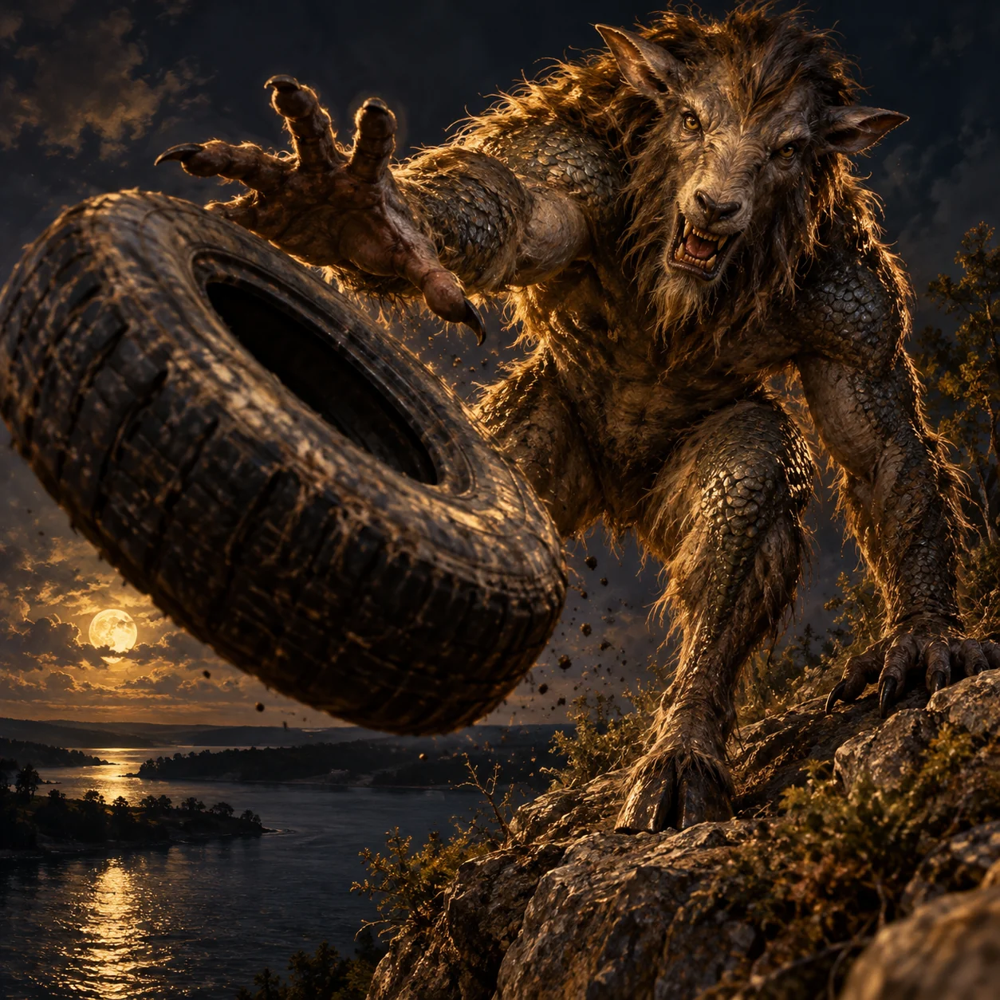
Furred and scaled man-goat throwing a tire from the bluff
Aura: Kesan kekuatan dari A physically hurled tire in the foreground, no magic.; lake-worth-monster-c08.
Audit ciri dan sumber
- [object Object]
- [object Object]
- [object Object]
Native dan thumbnail 200px dilihat. Uji Sangar 1–7 ya: subjek hybrid berbulu/bersisik dominan, ban terlempar c08 aktif dan berbahaya, dua mata/satu kepala/dua lengan/dua kaki sesuai, tangan depan lima jari bercakar; tanpa teks/glyph/aura/gore. Dominasi melalui perspektif rapat, bukan ukuran tubuh baru.
Review sumberONE original square premium painterly cinematic Mitoloka illustration of lake-worth-monster, Furred and scaled man-goat throwing a tire from the bluff. Create one square PNG at least 1024 by 1024.
ANATOMY: One part-man part-goat body, one goatlike head, two eyes, two arms with long five-fingered clawed hands, two goatlike legs; ragged fur mingled with clearly visible thick scales. No ornamental horns or armor. [lake-worth-monster-c02, lake-worth-monster-c03, lake-worth-monster-c05]
MOMENT: Hurl a heavy worn unlettered car tire from a lakeside bluff directly toward the foreground, body lunging, teeth bared, one hand releasing the tire and the other braced against rock.
POWER: A physically hurled tire in the foreground, no magic. [lake-worth-monster-c08]
SCALE & CAMERA: extreme low angle, confrontational close framing; subject fills 80 percent of the image, unmistakable silhouette at 200 pixels. Normal plausible creature size, no giant landscape scale.
LIGHT & WEATHER: one dominant low-key warm moonlight or dusk source as appropriate, sharp rim light, deep walnut shadows, sparse contextual spray or dust; dark warm painterly palette with antique gold accent, no flat daylight.
SURFACE: tactile weathered natural materials, detailed rough skin, wet scales or coarse hair where anatomically appropriate; thick expressive oil brushwork and premium cinematic composition.
SETTING: Lake Worth bluff by Greer Island near Fort Worth; dark lake below. [lake-worth-monster-c01, lake-worth-monster-c06]
MOOD: Menacing attacking cryptid; overwhelming and imposing, never cute, calm, decorative or static. No modern costume.
HARD CONSTRAINTS: no text, no lettering, no symbols, no glyphs or pseudo-glyphs, no inscriptions, logo, border, frame or watermark; no extra heads, limbs, fingers or eyes; no design borrowed from any film, game, anime or comic; no nudity or explicit gore; no generic glow aura, neon outline or energy ribbons. Background subordinate to subject.
Lantern man
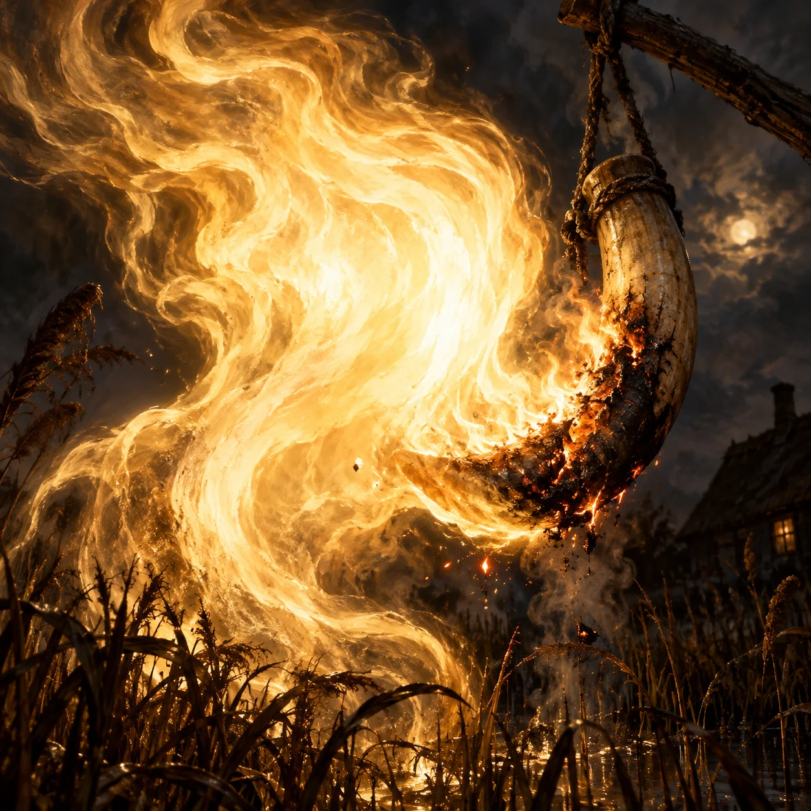
Active disembodied ghost light scorching the distracting horn
Aura: Kesan kekuatan dari The hanging horn burns and blackens under the ghost light; small orange embers and real smoke from contact, not neon or aura.; lantern-man-c06.
Audit ciri dan sumber
- [object Object]
- [object Object]
- [object Object]
Native dan 200px dilihat; Uji Sangar 1–7 ya. Manifestasi cahaya hantu mendominasi dan membakar tanduk c06 secara fisik, fen c01 terbaca. Tidak ada tubuh humanoid rekaan, teks/glyph atau aura generik; api adalah subjek cahaya hantu c01/c03 dan kontak pembakaran c06. Ancaman aktif, bukan lanskap.
Review sumberONE original square premium painterly cinematic Mitoloka illustration of lantern-man, Active disembodied ghost light scorching the distracting horn. Create one square PNG at least 1024 by 1024.
ANATOMY: One disembodied atmospheric ghost light, no face, skull, limbs or humanoid figure: a dense natural amber-white flame-shaped apparition. It must be the dominant visible subject. [lantern-man-c01, lantern-man-c03]
MOMENT: Surge close over reed beds and curl around the animal horn hanging at the end of a long wooden pole; the light is actively burning the horn.
POWER: The hanging horn burns and blackens under the ghost light; small orange embers and real smoke from contact, not neon or aura. [lantern-man-c06]
SCALE & CAMERA: extreme low angle, confrontational close framing; subject fills 80 percent of the image, unmistakable silhouette at 200 pixels. The apparition, horn and point of combustion fill the image; no landscape-only scene.
LIGHT & WEATHER: one dominant low-key warm moonlight or dusk source as appropriate, sharp rim light, deep walnut shadows, sparse contextual spray or dust; dark warm painterly palette with antique gold accent, no flat daylight.
SURFACE: tactile weathered natural materials, detailed rough skin, wet scales or coarse hair where anatomically appropriate; thick expressive oil brushwork and premium cinematic composition.
SETTING: East Anglian Wicken Fen, wet reeds, mud and a pole projecting from a distant shadowed cottage. [lantern-man-c01]
MOOD: Menacing spirit luring victims; overwhelming and imposing, never cute, calm, decorative or static. No modern costume.
HARD CONSTRAINTS: no text, no lettering, no symbols, no glyphs or pseudo-glyphs, no inscriptions, logo, border, frame or watermark; no extra heads, limbs, fingers or eyes; no design borrowed from any film, game, anime or comic; no nudity or explicit gore; no generic glow aura, neon outline or energy ribbons. Background subordinate to subject.
Lava bear
Menunggu gambar yang lolos audit
Legend of Trentren Vilu and Caicai Vilu
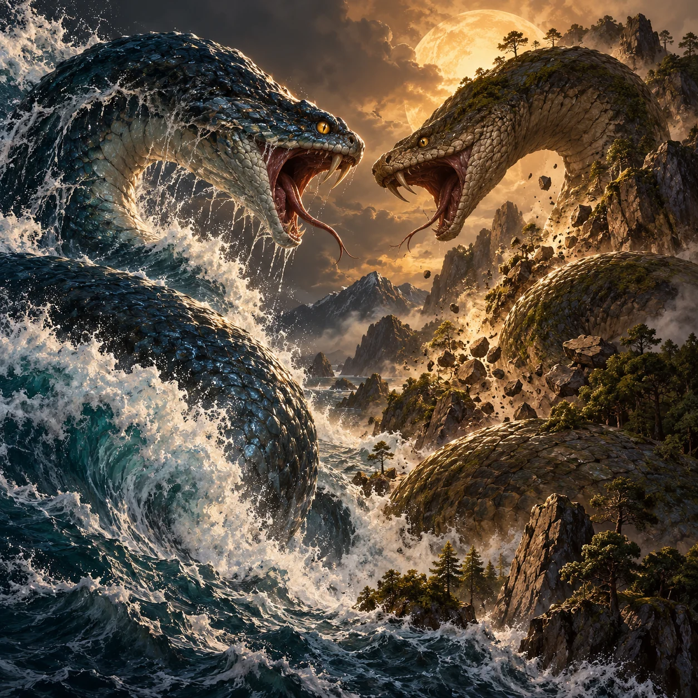
Two serpents battling between rising flood and rising mountains
Aura: Kesan kekuatan dari Sea flood surges and rocky hills rise, rock cracking and seawater foaming in the physical battle. No beams.; legend-of-trentren-vilu-and-caicai-vilu-c05, legend-of-trentren-vilu-and-caicai-vilu-c12.
Audit ciri dan sumber
- [object Object]
- [object Object]
- [object Object]
Native+200 dilihat; Sangar1–7 ya. Tepat dua ular tanpa anggota tambahan, satu kepala masing-masing. Pertarungan fisik c01/c08 dengan banjir/gempa c05 dan bukit meninggi c12; skala ular besar c06; tanpa teks/glyph/aura. Trentren pelindung, tidak menyerang manusia.
Review sumberONE original square premium painterly cinematic Mitoloka illustration of legend-of-trentren-vilu-and-caicai-vilu, Two serpents battling between rising flood and rising mountains. Create one square PNG at least 1024 by 1024.
ANATOMY: Exactly two enormous limbless serpents with one head and two eyes each, long continuous bodies, no horns, wings or dragon legs. One sea serpent and one land serpent. [legend-of-trentren-vilu-and-caicai-vilu-c01, legend-of-trentren-vilu-and-caicai-vilu-c04, legend-of-trentren-vilu-and-caicai-vilu-c06]
MOMENT: Clash face-to-face across the foreground, the sea serpent surging from the ocean left and the benevolent land serpent rising from mountains right to defend the high ground.
POWER: Sea flood surges and rocky hills rise, rock cracking and seawater foaming in the physical battle. No beams. [legend-of-trentren-vilu-and-caicai-vilu-c05, legend-of-trentren-vilu-and-caicai-vilu-c12]
SCALE & CAMERA: extreme low angle, confrontational close framing; subject fills 80 percent of the image, unmistakable silhouette at 200 pixels. Documented enormous scale; small mountain trees below their coils. Heads extremely prominent. No third serpent.
LIGHT & WEATHER: one dominant low-key warm moonlight or dusk source as appropriate, sharp rim light, deep walnut shadows, sparse contextual spray or dust; dark warm painterly palette with antique gold accent, no flat daylight.
SURFACE: tactile weathered natural materials, detailed rough skin, wet scales or coarse hair where anatomically appropriate; thick expressive oil brushwork and premium cinematic composition.
SETTING: Chiloe archipelago and southern Chile mountains meeting the sea. [legend-of-trentren-vilu-and-caicai-vilu-c02, legend-of-trentren-vilu-and-caicai-vilu-c03]
MOOD: Awe-inspiring mythic confrontation; land serpent protective; overwhelming and imposing, never cute, calm, decorative or static. No modern costume.
HARD CONSTRAINTS: no text, no lettering, no symbols, no glyphs or pseudo-glyphs, no inscriptions, logo, border, frame or watermark; no extra heads, limbs, fingers or eyes; no design borrowed from any film, game, anime or comic; no nudity or explicit gore; no generic glow aura, neon outline or energy ribbons. Background subordinate to subject.
Lo Ting
Menunggu gambar yang lolos audit
Madre de aguas
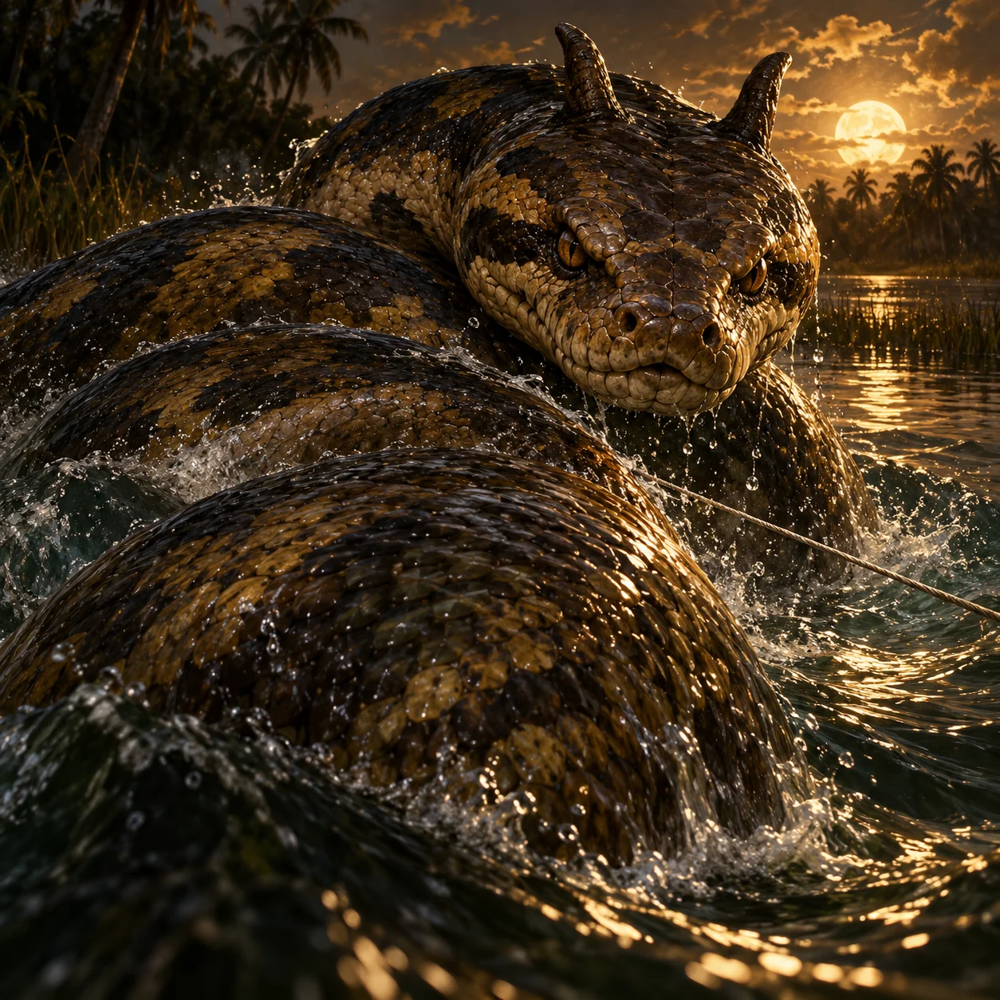
Palm-thick two-horned boa hauling back beneath lagoon water
Aura: Kesan kekuatan dari Powerful pull dragging an abandoned taut fishing line downward; deep water surges physically around the coils. No gunfire or invented power.; madre-de-aguas-c09.
Audit ciri dan sumber
- [object Object]
- [object Object]
- [object Object]
Native+200 dilihat; Sangar1–7 ya. Boa kepala tertutup tanpa taring rekaan, tepat dua tanduk/dua mata/satu kepala/tubuh tanpa kaki, sisik tebal c04 dan coils sebatang palma c03. Tarikan kuat c09 terbaca lewat air tersibak dan tali kontekstual. Tatapan konfrontatif, tanpa teks/glyph/aura/gore. Tali pancing polos adalah properti editorial, bukan kuasa.
Review sumberONE original square premium painterly cinematic Mitoloka illustration of madre-de-aguas, Palm-thick two-horned boa hauling back beneath lagoon water. Create one square PNG at least 1024 by 1024.
ANATOMY: One giant boa serpent as thick as a palm trunk, one head, two eyes, exactly two short horn-like projections on its head, heavy overlapping bullet-impenetrable scales, boa constrictor head, NO VENOM FANGS; one continuous limbless body. [madre-de-aguas-c03, madre-de-aguas-c04]
MOMENT: Haul backward into lagoon water while twisting the muscular coils toward the viewer, closed powerful jaws and lowered brows stare toward viewer in warning; absolutely no teeth or fangs visible.
POWER: Powerful pull dragging an abandoned taut fishing line downward; deep water surges physically around the coils. No gunfire or invented power. Do not show chain, net, hook, or actual captured body; a plain slack line may be incidental. [madre-de-aguas-c09]
SCALE & CAMERA: extreme low angle, confrontational close framing; subject fills 80 percent of the image, unmistakable silhouette at 200 pixels. Documented giant thickness, a palm trunk behind for scale; close head and massive coils.
LIGHT & WEATHER: one dominant low-key warm moonlight or dusk source as appropriate, sharp rim light, deep walnut shadows, sparse contextual spray or dust; dark warm painterly palette with antique gold accent, no flat daylight.
SURFACE: tactile weathered natural materials, detailed rough skin, wet scales or coarse hair where anatomically appropriate; thick expressive oil brushwork and premium cinematic composition.
SETTING: Cuban Laguna del Itabo, tropical lagoon and reed-lined water. [madre-de-aguas-c05, madre-de-aguas-c08]
MOOD: Awe-inspiring invulnerable water mother; do not make her a demonic villain; overwhelming and imposing, never cute, calm, decorative or static. No modern costume.
HARD CONSTRAINTS: no text, no lettering, no symbols, no glyphs or pseudo-glyphs, no inscriptions, logo, border, frame or watermark; no extra heads, limbs, fingers or eyes; no design borrowed from any film, game, anime or comic; no nudity or explicit gore; no generic glow aura, neon outline or energy ribbons. Background subordinate to subject.
Mama D'Leau
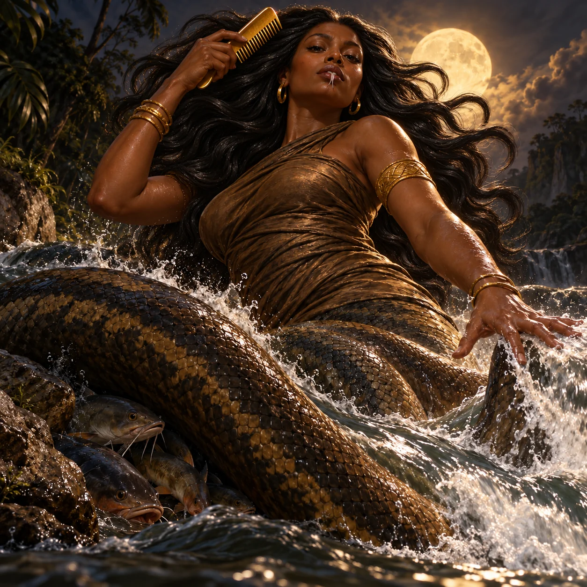
Human-headed river mother with long flowing sinuous black hair, forked tongue, golden comb and one large snake lower body
Aura: Kesan kekuatan dari Physical river displacement by her documented snake body, with river animals sheltering behind the coils; no conjured energy.; mama-d-leau-c02, mama-d-leau-c07.
Audit ciri dan sumber
- [object Object]
- [object Object]
- [object Object]
Native 1254×1254, preview 200px dan kedua crop tangan dilihat. Uji Sangar 1–7 ya: sosok mendominasi, agung pada 200px, sedang menyisir dan menggerakkan air; cipratan fisik dari gerak tubuh c03/c07 dan hewan sungai terlindung c02, tanpa sihir rekaan. Tepat satu kepala manusia/dua mata/dua lengan, tangan pemegang comb dengan ibu jari dan empat jari tertekuk, tangan menjangkau air dengan ibu jari dan empat jari terpisah; tidak ada kaki. Rambut panjang hitam berupa helaian berombak tanpa kepala/mata/mulut/lidah/sisik ular; satu lidah bercabang hanya dari mulut manusia c04. Golden comb c04, opaque gown, satu tubuh bawah ular besar c03/c07, guardian mood c02/c09. Tidak ada teks/glyph/watermark/frame/aura. Ini pemeriksaan worker Codex; root perlu melihat PNG sendiri sebelum menerima.
Review sumberUse case: precise-object-edit
Asset type: ONE square premium painterly cinematic Mitoloka illustration of Mama D’Leau, at least 1024 by 1024.
Input image 1: edit target; preserve this exact composition, character, pose and painterly finish.
PRIMARY REQUEST: Change ONLY the hair. Replace ALL living snakes on her head with ordinary long flowing black human hair in smooth sinuous snakelike waves. The accepted claims describe long hair and snaky hair, meaning a snakelike wavy shape; they do not document living snakes in the hair. Every strand must have ordinary fine hair fibers, softly tapering ends and no animal features. Remove EVERY snake head, eye, mouth, fang, tongue and scale from the hair, including the silhouette at the top, left and right. Keep long wavy hair in motion around the head and shoulders, and preserve the raised golden comb passing through it. [mama-d-leau-c03, mama-d-leau-c04]
INVARIANTS: Preserve one human female head with exactly two eyes and her original human face, gaze and narrow forked HUMAN mouth tongue. Preserve exactly TWO arms and exactly two hands with five fingers each, the left-image hand holding the golden comb and right-image hand reaching toward the river. Preserve her full opaque bronze-brown gown, gold earrings and bracelets, one continuous LARGE SNAKE LOWER BODY coiling from the waist instead of legs, existing scales ONLY on that lower body, river spray caused by the body's physical motion, sheltered river fish, rocks, tropical foliage, moonlight, low camera and close dominating framing. Preserve the dignified river guardian, protector and healer mood. [mama-d-leau-c02, mama-d-leau-c03, mama-d-leau-c04, mama-d-leau-c07, mama-d-leau-c09]
HARD CONSTRAINTS: no living snakes or snake anatomy anywhere in the hair; no Medusa hairstyle. No additional snake heads elsewhere. No new objects or characters. No extra heads, eyes, arms, legs or fingers; no text, lettering, symbols, inscriptions, logo, border, frame or watermark; no nudity, gore, generic aura, neon outline or energy ribbons. Keep the square image and the same strongly imposing active composition.
Mama Qucha
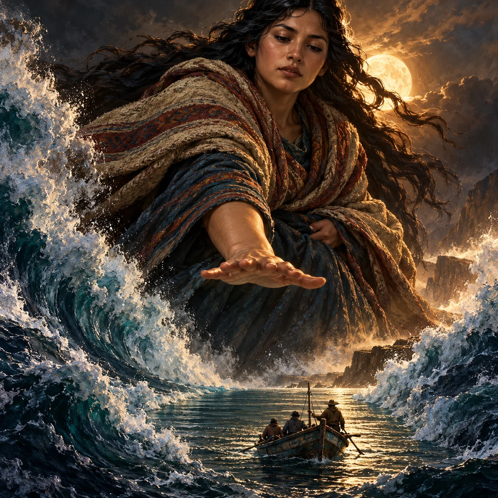
Mama Qucha calming a passage through rough sea
Aura: Kesan kekuatan dari Rough water becomes calm to protect fishermen; rough breakers beside a smooth passage to shore; no glowing spell.; mama-qucha-c01, mama-qucha-c02.
Audit ciri dan sumber
- [object Object]
- [object Object]
- [object Object]
Native+200 dilihat; Sangar1–7 ya. Dewi monumental menenangkan jalur c02 untuk nelayan c01, palmtangan lima jari dan dua lengan/dua mata/satu kepala, torso penuhkain buram. Bukan perempuan biasa karena skala alegoris eksplisit dan jalur air tenang di antara breakers, sacred awe benevolent. Tanpa teks/glyph/aura/gore; tenun garis abstrak tanpa huruf.
Review sumberONE original square premium painterly cinematic Mitoloka illustration of mama-qucha, Mama Qucha calming a passage through rough sea. Create one square PNG at least 1024 by 1024.
ANATOMY: One pale beautiful young woman, one head, two eyes, two arms and two legs, completely clothed in an opaque plain Andean-inspired woven mantle and long robe, no symbols or ornamental crown. [mama-qucha-c08]
MOMENT: Reach forward to settle a breaking sea wave, calm determined gaze down toward a small fishing boat, her outstretched palm over a suddenly smoothed channel.
POWER: Rough water becomes calm to protect fishermen; rough breakers beside a smooth passage to shore; no glowing spell. [mama-qucha-c01, mama-qucha-c02]
SCALE & CAMERA: extreme low angle, confrontational close framing; subject fills 80 percent of the image, unmistakable silhouette at 200 pixels. Monumental goddess scale is explicitly an editorial sacred allegory under GAMBAR section 6.5, not a researched fact of bodily size. She fills the image and the tiny fishing boat anchors her protection.
LIGHT & WEATHER: one dominant low-key warm moonlight or dusk source as appropriate, sharp rim light, deep walnut shadows, sparse contextual spray or dust; dark warm painterly palette with antique gold accent, no flat daylight.
SURFACE: tactile weathered natural materials, detailed rough skin, wet scales or coarse hair where anatomically appropriate; thick expressive oil brushwork and premium cinematic composition.
SETTING: Andean Pacific coastal sea, cliffs barely visible behind. [mama-qucha-c05, mama-qucha-c09]
MOOD: Revered benevolent Mother Sea; sacred awe, dignity and mercy; overwhelming and imposing, never cute, calm, decorative or static. No modern costume.
HARD CONSTRAINTS: no text, no lettering, no symbols, no glyphs or pseudo-glyphs, no inscriptions, logo, border, frame or watermark; no extra heads, limbs, fingers or eyes; no design borrowed from any film, game, anime or comic; no nudity or explicit gore; no generic glow aura, neon outline or energy ribbons. Background subordinate to subject.
Māui (Māori mythology)
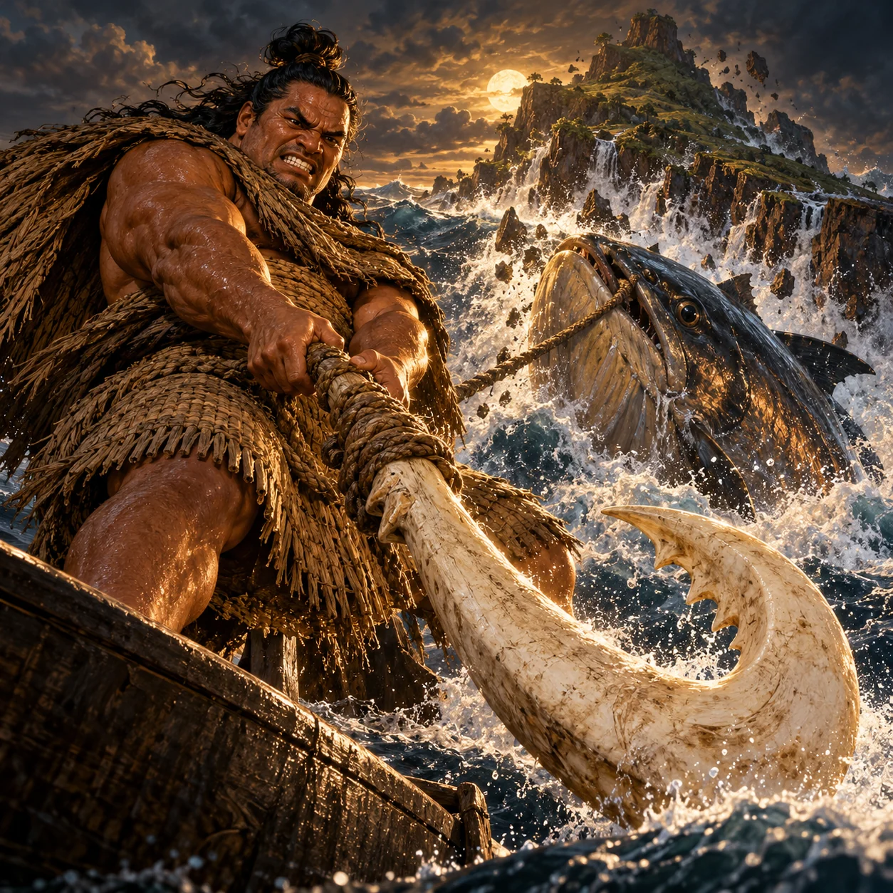
Topknotted Maui raising hidden land with ancestral jawbone fishhook
Aura: Kesan kekuatan dari Superhuman strength fishes hidden land up from the sea using the ancestral jawbone hook; real heaving rock, water and foam.; maui-q1806741-c02, maui-q1806741-c03, maui-q1806741-c07.
Audit ciri dan sumber
- [object Object]
- [object Object]
- [object Object]
Native+200 dilihat; Sangar1–7 ya. Topknot c10, jawbonefishhook c03/c07 besarjelas, hero exertion dan landraising fishc03/c07 aktif, tubuh normal framinglow. Satu kepala/dua mata/dua lengan/dua kaki, lima jari tangan menggenggam, wovencloak opaque menutup torso/hip. Tanpa tato, glyph, teks, aura, gore, atau desain IP; sacred culture hero.
Review sumberONE original square premium painterly cinematic Mitoloka illustration of maui-q1806741, Topknotted Maui raising hidden land with ancestral jawbone fishhook. Create one square PNG at least 1024 by 1024.
ANATOMY: One Maori demigod man with one head, two eyes, two muscular arms and two legs, hair bound in a clearly readable topknot. Opaque plain woven cloak, full torso covering and woven knee-length wrap; no tattoos or inscriptions. A huge plain bone fishhook shaped from an ancestress jawbone, on a thick cord held in both hands. [maui-q1806741-c03, maui-q1806741-c07, maui-q1806741-c10]
MOMENT: Haul violently backward in his canoe with the jawbone hook and line under tension, teeth clenched, looking at the viewer as land and the huge hooked fish surge from the ocean.
POWER: Superhuman strength fishes hidden land up from the sea using the ancestral jawbone hook; real heaving rock, water and foam. [maui-q1806741-c02, maui-q1806741-c03, maui-q1806741-c07]
SCALE & CAMERA: extreme low angle, confrontational close framing; subject fills 80 percent of the image, unmistakable silhouette at 200 pixels. Maui is not enlarged into a giant; close low camera in canoe, giant fish and emerging land documented. Prominent plain bone hook in foreground.
LIGHT & WEATHER: one dominant low-key warm moonlight or dusk source as appropriate, sharp rim light, deep walnut shadows, sparse contextual spray or dust; dark warm painterly palette with antique gold accent, no flat daylight.
SURFACE: tactile weathered natural materials, detailed rough skin, wet scales or coarse hair where anatomically appropriate; thick expressive oil brushwork and premium cinematic composition.
SETTING: New Zealand ocean at the emergence of the North Island, a plain canoe without carved symbols. [maui-q1806741-c03, maui-q1806741-c04]
MOOD: Culture hero in decisive overwhelming exertion; respectful and awe-inspiring; overwhelming and imposing, never cute, calm, decorative or static. No modern costume.
HARD CONSTRAINTS: no text, no lettering, no symbols, no glyphs or pseudo-glyphs, no inscriptions, logo, border, frame or watermark; no extra heads, limbs, fingers or eyes; no design borrowed from any film, game, anime or comic; no nudity or explicit gore; no generic glow aura, neon outline or energy ribbons. Background subordinate to subject.
Mazomba
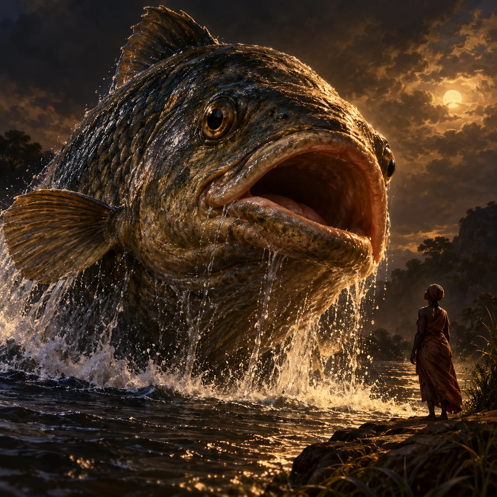
Giant talking Mazomba addressing the traveler
Aura: Kesan kekuatan dari The giant fish addresses the woman; water physically pours off its lifted head, no magical effects.; mazomba-c06, mazomba-c07.
Audit ciri dan sumber
- [object Object]
- [object Object]
- [object Object]
Native+200 dilihat; Sangar1–7 ya. Ikan raksasa c01/c03 secara dominan muncul dengan mulut berbicara c06 kepada perempuan; splash fisik bukan kuasa sihir. Satu kepala/dua mata/sirip wajar tanpa tangan/tanduk/fangs, ukuran terlihat dari perempuan kecil. Bukan ikan biasa karena skala raksasa dan aksi tutur; tanpa teks/glyph/aura/IP/gore.
Review sumberONE original square premium painterly cinematic Mitoloka illustration of mazomba, Giant talking Mazomba addressing the traveler. Create one square PNG at least 1024 by 1024.
ANATOMY: One giant fish, a single large fish head with two lateral eyes, paired pectoral fins, one dorsal fin and tail fin; closed scaled body, no humanoid limbs, horns, beard or invented monster anatomy. [mazomba-c01, mazomba-c03, mazomba-c04]
MOMENT: Rise almost vertically from the water close to the viewer, open the fish mouth as if speaking to a tiny lone woman on the near bank, imposing direct eye contact.
POWER: The giant fish addresses the woman; water physically pours off its lifted head, no magical effects. [mazomba-c06, mazomba-c07]
SCALE & CAMERA: extreme low angle, confrontational close framing; subject fills 80 percent of the image, unmistakable silhouette at 200 pixels. Documented giant fish; woman on bank far smaller than its head, opaque clothing. Fish dominates image.
LIGHT & WEATHER: one dominant low-key warm moonlight or dusk source as appropriate, sharp rim light, deep walnut shadows, sparse contextual spray or dust; dark warm painterly palette with antique gold accent, no flat daylight.
SURFACE: tactile weathered natural materials, detailed rough skin, wet scales or coarse hair where anatomically appropriate; thick expressive oil brushwork and premium cinematic composition.
SETTING: Chaga tale water beside the route toward Mulungu; dark Tanzanian waters and bank. [mazomba-c06, mazomba-c07]
MOOD: Awe-inspiring talking giant fish, no predatory attack on the woman; overwhelming and imposing, never cute, calm, decorative or static. No modern costume.
HARD CONSTRAINTS: no text, no lettering, no symbols, no glyphs or pseudo-glyphs, no inscriptions, logo, border, frame or watermark; no extra heads, limbs, fingers or eyes; no design borrowed from any film, game, anime or comic; no nudity or explicit gore; no generic glow aura, neon outline or energy ribbons. Background subordinate to subject.
Millalobo
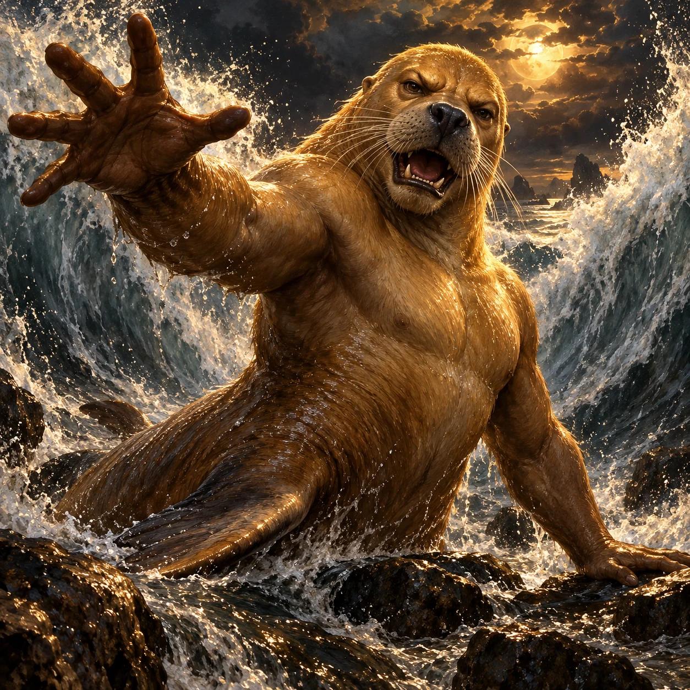
Golden-furred human and sea-lion sea ruler commanding the tide
Aura: Kesan kekuatan dari Documented lordship over seas, directing tides and calms/storms: surf physically banks and divides around his command; no magic glow.; millalobo-c04, millalobo-c12, millalobo-c14.
Audit ciri dan sumber
- [object Object]
- [object Object]
- [object Object]
Native+200 dilihat; Sangar1–7 ya. Moncong singa laut berhidung bulat, brow/ekspresi manusia, dada manusia bershortgoldfur c02/c05/c10/c11, lowersealflippers tanpa kaki/ekorikan. Tangan depan lima jari, satu kepala/dua mata/dua lengan. Commandtides c14 tampak airterbelah, bukan aura; seal-sized dominasi perspektif. Tanpa teks/glyph/gore/IP;01 terarsip karena felineface.
Review sumberONE original square premium painterly cinematic Mitoloka illustration of millalobo, Golden-furred human and sea-lion sea ruler commanding the tide. Create one square PNG at least 1024 by 1024.
ANATOMY: One being the size of a large seal, with a humanlike chest and two arms, a lower body entirely sea-lion shaped with flippers instead of legs, and one face visibly blending an adult MAN and a SEA LION (a marine seal animal, NOT a land lion): human forehead, human brow and human expressive eyes, human upper nose bridge transitioning to a rounded broad dark seal nose and blunt broad sea-lion muzzle with short sparse whiskers. Absolutely no feline triangular nose, cat face, lion mane or large cat canines. Two eyes, very short shiny golden-yellow fur, no mane over the body; no fish tail, trident, crown or extra head. [millalobo-c02, millalobo-c05, millalobo-c10, millalobo-c11]
MOMENT: Rear from the rocky shallows and thrust one hand toward a surging tide, blunt seal muzzle open in a forceful bleat, small normal marine mammal teeth only, gaze down directly at viewer.
POWER: Documented lordship over seas, directing tides and calms/storms: surf physically banks and divides around his command; no magic glow. [millalobo-c04, millalobo-c12, millalobo-c14]
SCALE & CAMERA: extreme low angle, confrontational close framing; subject fills 80 percent of the image, unmistakable silhouette at 200 pixels. Strictly large-seal-sized, no unsupported giant scale; imposing only through extreme close low perspective.
LIGHT & WEATHER: one dominant low-key warm moonlight or dusk source as appropriate, sharp rim light, deep walnut shadows, sparse contextual spray or dust; dark warm painterly palette with antique gold accent, no flat daylight.
SURFACE: tactile weathered natural materials, detailed rough skin, wet scales or coarse hair where anatomically appropriate; thick expressive oil brushwork and premium cinematic composition.
SETTING: Chiloe sea in rocky shallows, dark water and sea floor behind. [millalobo-c06, millalobo-c08, millalobo-c16]
MOOD: Awe-inspiring sea ruler respected by benevolent and evil beings; not a villain; overwhelming and imposing, never cute, calm, decorative or static. No modern costume.
HARD CONSTRAINTS: no text, no lettering, no symbols, no glyphs or pseudo-glyphs, no inscriptions, logo, border, frame or watermark; no extra heads, limbs, fingers or eyes; no design borrowed from any film, game, anime or comic; no nudity or explicit gore; no generic glow aura, neon outline or energy ribbons. Background subordinate to subject.
Mirokutana
Menunggu gambar yang lolos audit
Misshaku Kongō
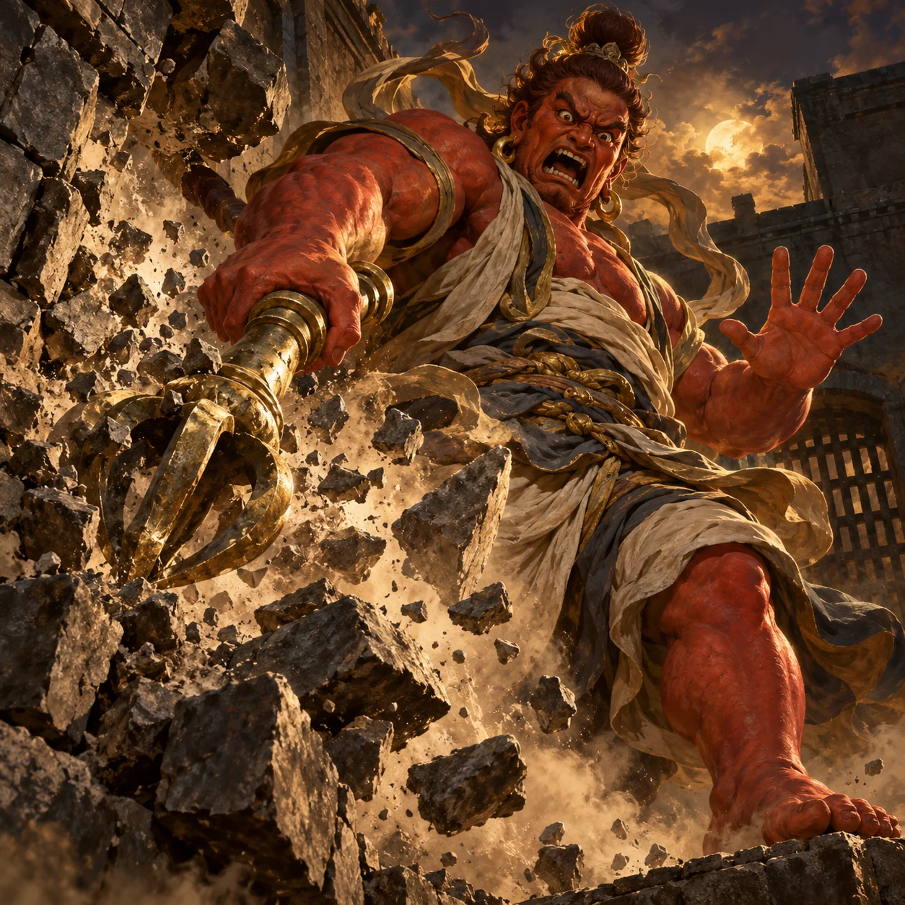
Red topknotted Agyo guardian breaking prison masonry with vajra
Aura: Kesan kekuatan dari A prison wall breaks physically under the vajra blow, flying stone fragments and thick dust, liberation without gore.; misshaku-kongo-c10.
Audit ciri dan sumber
- [object Object]
- [object Object]
- [object Object]
Native+200 dilihat; Sangar1–7 ya. Redbody/topknot/glaringeyes/openAhmouth/teeth/barefeet c01/c02/c08 sangatjelas, vajrapestle menghancurkan penjarac10 fisik. Tepat satu kepala/dua mata/dua lengan/dua kaki, telapak kanan lima jari, kakidepan limajari. Kainburam pada torso/waist tanpa genital nudity/gore. Sacred liberatingguardian, bukan villain/manusia biasa. Tanpa teks/glyph/aura/IP.
Review sumberONE original square premium painterly cinematic Mitoloka illustration of misshaku-kongo, Red topknotted Agyo guardian breaking prison masonry with vajra. Create one square PNG at least 1024 by 1024.
ANATOMY: One red-bodied Buddhist vajra guardian, one head, two glaring eyes, mouth wide open with bared teeth forming Ah, a topknot, exactly two arms and two bare feet. Fully opaque plain flowing temple cloth over chest and waist, no nudity. One plain metal vajra pestle firmly in one hand, the other hand opens palm with exactly five fingers. No inscriptions on weapon or clothing. [misshaku-kongo-c01, misshaku-kongo-c02, misshaku-kongo-c03, misshaku-kongo-c08]
MOMENT: Strike the prison wall apart with the vajra pestle, body twisting toward the viewer in heroic protective exertion; fiercely compassionate protective face.
POWER: A prison wall breaks physically under the vajra blow, flying stone fragments and thick dust, liberation without gore. [misshaku-kongo-c10]
SCALE & CAMERA: extreme low angle, confrontational close framing; subject fills 80 percent of the image, unmistakable silhouette at 200 pixels. Sacred monumental guardian composition under GAMBAR section 6.5, not an asserted researched giant bodily size.
LIGHT & WEATHER: one dominant low-key warm moonlight or dusk source as appropriate, sharp rim light, deep walnut shadows, sparse contextual spray or dust; dark warm painterly palette with antique gold accent, no flat daylight.
SURFACE: tactile weathered natural materials, detailed rough skin, wet scales or coarse hair where anatomically appropriate; thick expressive oil brushwork and premium cinematic composition.
SETTING: Ancient Changan prison stone wall, unlettered plain masonry; no modern signs. [misshaku-kongo-c10]
MOOD: Majestic valiant dharmapala guardian, sacred awe and protection, never evil; overwhelming and imposing, never cute, calm, decorative or static. No modern costume.
HARD CONSTRAINTS: no text, no lettering, no symbols, no glyphs or pseudo-glyphs, no inscriptions, logo, border, frame or watermark; no extra heads, limbs, fingers or eyes; no design borrowed from any film, game, anime or comic; no nudity or explicit gore; no generic glow aura, neon outline or energy ribbons. Background subordinate to subject.
Mogollon Monster
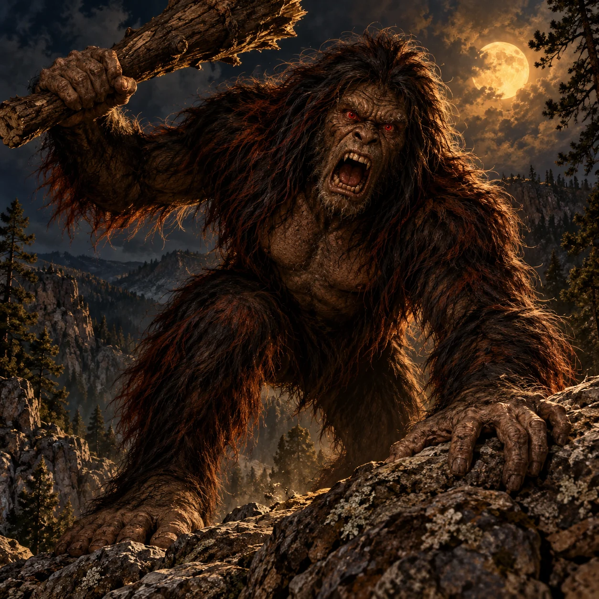
Red-eyed long-haired Mogollon Monster threatening with club
Aura: Kesan kekuatan dari Physical threat using a raised club; no gore, prey bodies or magic.; mogollon-monster-c10, mogollon-monster-c12.
Audit ciri dan sumber
- [object Object]
- [object Object]
- [object Object]
Native+200 dilihat; Sangar1–7 ya. Makhluk biped berambut panjang dengan wajah/dada/tangan/kaki tanpa rambut c05; dua mata merah non-glow c02, raisedclub c10/c12 dan scream c04 aktifkonfrontatif. Satu kepala/dua mata/dua lengan/dua kaki dan limajari, skala over7ft c02. Tanpa teks/glyph/aura/gore/IP.
Review sumberONE original square premium painterly cinematic Mitoloka illustration of mogollon-monster, Red-eyed long-haired Mogollon Monster threatening with club. Create one square PNG at least 1024 by 1024.
ANATOMY: One ape-like biped over seven feet tall, one head with two large red eyes (red pigment, not glow), two arms and two legs. Long black and reddish-brown hair covers body except exposed rough face, chest, hands and feet. Humanlike hands exactly five fingers. [mogollon-monster-c01, mogollon-monster-c02, mogollon-monster-c05]
MOMENT: Lunge down toward the viewer with a large rough wooden club raised in one hand, other hand gripping rock, mouth open in a frightening scream.
POWER: Physical threat using a raised club; no gore, prey bodies or magic. [mogollon-monster-c10, mogollon-monster-c12]
SCALE & CAMERA: extreme low angle, confrontational close framing; subject fills 80 percent of the image, unmistakable silhouette at 200 pixels. Documented over-seven-foot biped, trees serve subtle scale.
LIGHT & WEATHER: one dominant low-key warm moonlight or dusk source as appropriate, sharp rim light, deep walnut shadows, sparse contextual spray or dust; dark warm painterly palette with antique gold accent, no flat daylight.
SURFACE: tactile weathered natural materials, detailed rough skin, wet scales or coarse hair where anatomically appropriate; thick expressive oil brushwork and premium cinematic composition.
SETTING: Arizona Mogollon Rim pine forest at night, rocky ledge. [mogollon-monster-c01, mogollon-monster-c13]
MOOD: Territorial violent nocturnal cryptid; overwhelming and imposing, never cute, calm, decorative or static. No modern costume.
HARD CONSTRAINTS: no text, no lettering, no symbols, no glyphs or pseudo-glyphs, no inscriptions, logo, border, frame or watermark; no extra heads, limbs, fingers or eyes; no design borrowed from any film, game, anime or comic; no nudity or explicit gore; no generic glow aura, neon outline or energy ribbons. Background subordinate to subject.
Moixina
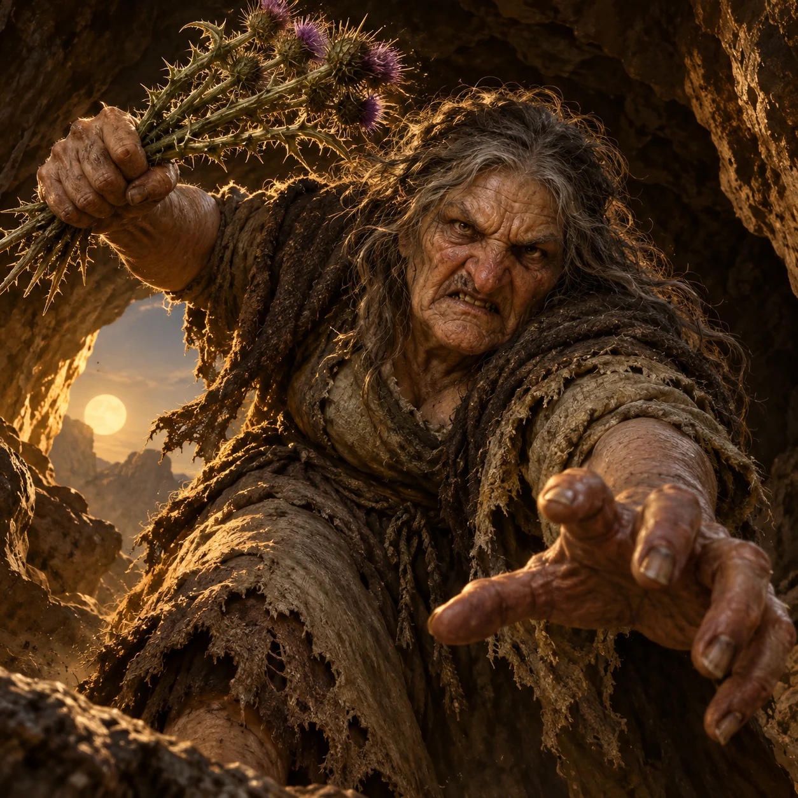
Cave ogress lunging with a thistle comb
Aura: Kesan kekuatan dari Physical threatening use of the thistle comb, no spell or injury.; moixina-c02, moixina-c03.
Audit ciri dan sumber
- [object Object]
- [object Object]
- [object Object]
Native+200 dilihat; Sangar1–7 ya. Scowlingoldogress c01/c03 cavec01 dominan konfrontatif, swungthistlecomb c02/c03 dan handreach active; dua mata/satu kepala/dua lengan/dua kaki, telapak foreground tepat5jari. Wajah sangatasing dan kain lusuh buram, tanpa tanduk/taring rekaan, korbananak/gore/aura/teks/glyph. Tidakordinarycalmwoman karena aksithreat/thistle/keganjilan scowl ekstrem.
Review sumberONE original square premium painterly cinematic Mitoloka illustration of moixina, Cave ogress lunging with a thistle comb. Create one square PNG at least 1024 by 1024.
ANATOMY: One scowling strange old ogress with an aged humanlike face, two eyes, one head, two arms and two legs. Fully opaque coarse unpatterned ragged gown and shawl. One hand has exactly five fingers and grips a cluster of harsh thistle stalks as a crude comb, the other five-fingered hand reaches forward. [moixina-c01, moixina-c02, moixina-c03]
MOMENT: Lunge out of her cave toward the viewer, scowling and swinging the thistle comb in a threatening combing motion. No child victims.
POWER: Physical threatening use of the thistle comb, no spell or injury. [moixina-c02, moixina-c03]
SCALE & CAMERA: extreme low angle, confrontational close framing; subject fills 80 percent of the image, unmistakable silhouette at 200 pixels. Do not enlarge into an unsupported giant; face and thistle weapon dominate a tight close low perspective, grotesque scowl but no extra monster anatomy.
LIGHT & WEATHER: one dominant low-key warm moonlight or dusk source as appropriate, sharp rim light, deep walnut shadows, sparse contextual spray or dust; dark warm painterly palette with antique gold accent, no flat daylight.
SURFACE: tactile weathered natural materials, detailed rough skin, wet scales or coarse hair where anatomically appropriate; thick expressive oil brushwork and premium cinematic composition.
SETTING: Catalan cave interior with jagged rocks and a narrow dusk-lit mouth. [moixina-c01, moixina-c03]
MOOD: Bad-tempered child-scaring ogress, unmistakably threatening; overwhelming and imposing, never cute, calm, decorative or static. No modern costume.
HARD CONSTRAINTS: no text, no lettering, no symbols, no glyphs or pseudo-glyphs, no inscriptions, logo, border, frame or watermark; no extra heads, limbs, fingers or eyes; no design borrowed from any film, game, anime or comic; no nudity or explicit gore; no generic glow aura, neon outline or energy ribbons. Background subordinate to subject.
Moñái
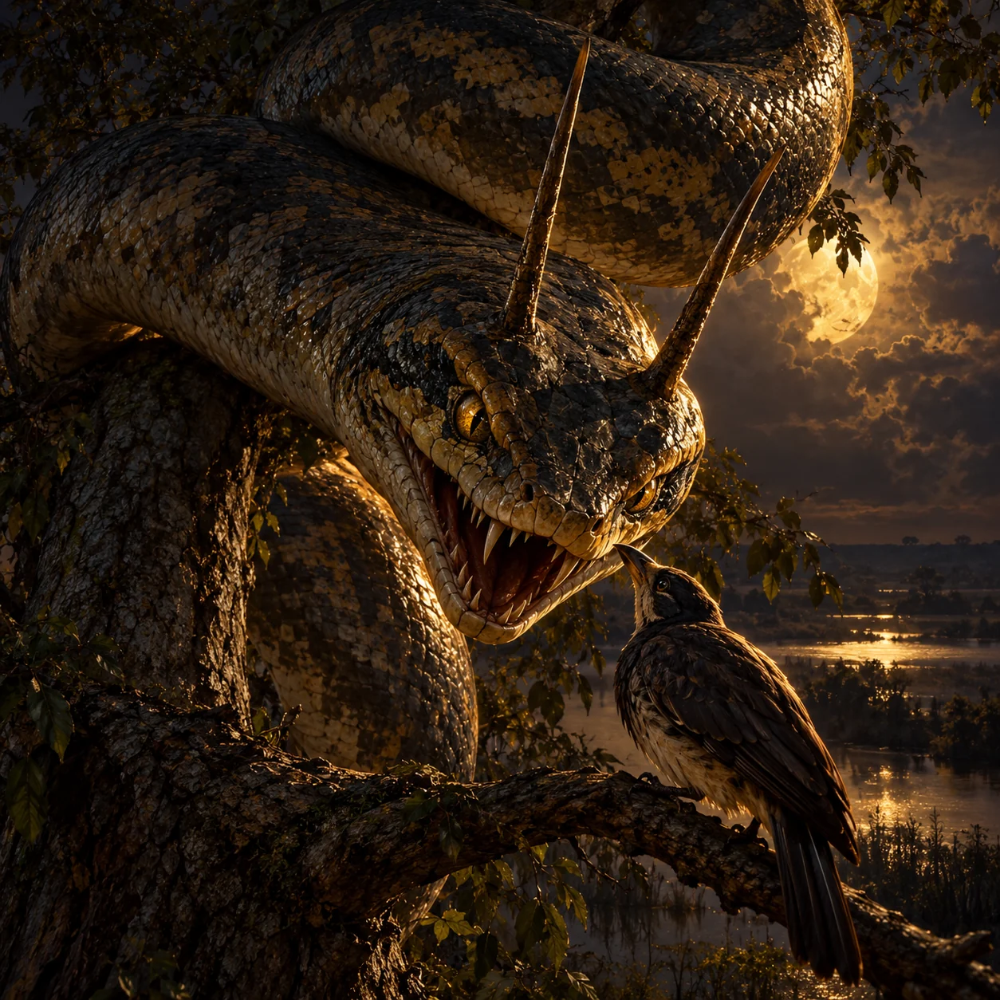
Two-antenna huge serpent entrancing a bird as it descends a tree
Aura: Kesan kekuatan dari Bird entranced by hypnotic antennae holds still on a branch within reach, physically readable interaction; no hypnosis beams, aura or floating symbols.; monai-c02.
Audit ciri dan sumber
- [object Object]
- [object Object]
- [object Object]
Native+200 dilihat; Sangar1–7 ya. Tepat dua spikeantennae/satu kepala/dua mata/bodylimbless/pointedteeth c13; serpentslidingdowntree & mesmerizedbirdc02 aktif terbaca. Head dominan, luar biasa besarc13 via batangpohon. Tidakbeam/aura/glyph/teks/gore/IP; burungdiam hipnosis bukan efekkuasaberdasar warna.
Review sumberONE original square premium painterly cinematic Mitoloka illustration of monai, Two-antenna huge serpent entrancing a bird as it descends a tree. Create one square PNG at least 1024 by 1024.
ANATOMY: One extraordinarily large limbless serpent, one head with two eyes, exactly two pointed spike-like antennae on its head, a mouth with clearly visible pointed teeth, long unbroken coils. No limbs, wings or extra horns. [monai-c02, monai-c13]
MOMENT: Climb a tree and slide a huge upper coil down toward a bird halted in front of its two antennae, head facing viewer, jaws parting.
POWER: Bird entranced by hypnotic antennae holds still on a branch within reach, physically readable interaction; no hypnosis beams, aura or floating symbols. [monai-c02]
SCALE & CAMERA: extreme low angle, confrontational close framing; subject fills 80 percent of the image, unmistakable silhouette at 200 pixels. Documented extraordinary size; tree trunk small beside coils, close head. Antennae conspicuous as exactly two spikes.
LIGHT & WEATHER: one dominant low-key warm moonlight or dusk source as appropriate, sharp rim light, deep walnut shadows, sparse contextual spray or dust; dark warm painterly palette with antique gold accent, no flat daylight.
SURFACE: tactile weathered natural materials, detailed rough skin, wet scales or coarse hair where anatomically appropriate; thick expressive oil brushwork and premium cinematic composition.
SETTING: Paraguayan field-edge tree close to dark swamp water near Yaguaron. [monai-c04, monai-c12]
MOOD: Dangerous mythic presence, without slaughter or attacks on people; overwhelming and imposing, never cute, calm, decorative or static. No modern costume.
HARD CONSTRAINTS: no text, no lettering, no symbols, no glyphs or pseudo-glyphs, no inscriptions, logo, border, frame or watermark; no extra heads, limbs, fingers or eyes; no design borrowed from any film, game, anime or comic; no nudity or explicit gore; no generic glow aura, neon outline or energy ribbons. Background subordinate to subject.
Monopod (creature)
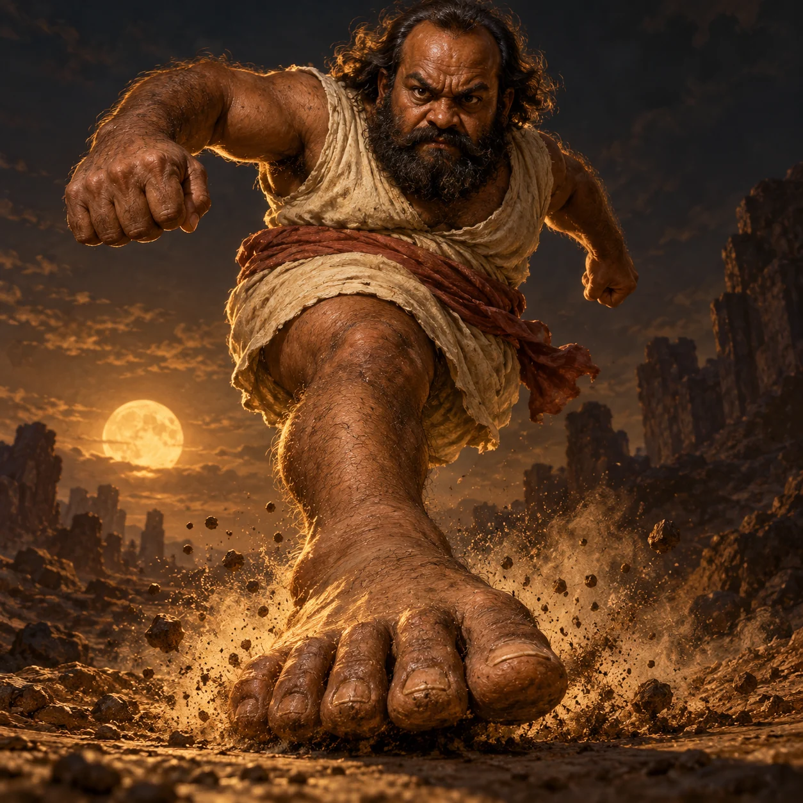
Monopod jumping rapidly on one central leg and one huge five-toed foot
Aura: Kesan kekuatan dari Surprisingly fast jumping with one leg, dirt kicked from contact and long physical shadow from the large foot. No supernatural glow.; monopod-creature-c05.
Audit ciri dan sumber
- [object Object]
- [object Object]
- [object Object]
Native+200 dilihat; Sangar1–7 ya. Exactlyonecentralleg andonehugefoot withfiveclearlyseparatedtoes c01/c04, twoarms/fivefingerhands/twoeyes/onehead. Activefastjump c05 dirtcontact, ominous focusedface, opaquecloth and dwarf-like torso proportions. No secondleg/stump/prosthesis, glyph/text/aura/gore/IP; uncanny anatomy immediatelyreads at200.
Review sumberONE original square premium painterly cinematic Mitoloka illustration of monopod-creature, Monopod jumping rapidly on one central leg and one huge five-toed foot. Create one square PNG at least 1024 by 1024.
ANATOMY: One dwarf-like humanoid man, one head, two eyes, two arms, and EXACTLY ONE leg centered beneath his pelvis ending in ONE enormously broad human foot with exactly five toes. No second leg, stump, prosthesis or split limb. Opaque plain woven tunic and short wrap covering torso and hips. [monopod-creature-c01, monopod-creature-c04, monopod-creature-c05]
MOMENT: Spring rapidly toward the viewer, sole giant foot launching from ground; single center leg clearly visible in uninterrupted silhouette, elbows driving forward, intense focused gaze.
POWER: Surprisingly fast jumping with one leg, dirt kicked from contact and long physical shadow from the large foot. No supernatural glow. [monopod-creature-c05]
SCALE & CAMERA: extreme low angle, confrontational close framing; subject fills 80 percent of the image, unmistakable silhouette at 200 pixels. Dwarf-like actual size, no unsupported giant body. Low close camera makes the enormous documented foot and central single leg dominate.
LIGHT & WEATHER: one dominant low-key warm moonlight or dusk source as appropriate, sharp rim light, deep walnut shadows, sparse contextual spray or dust; dark warm painterly palette with antique gold accent, no flat daylight.
SURFACE: tactile weathered natural materials, detailed rough skin, wet scales or coarse hair where anatomically appropriate; thick expressive oil brushwork and premium cinematic composition.
SETTING: Hot Indian terrain of the ancient traveler tales, bare rock and dusty ground. [monopod-creature-c03, monopod-creature-c04]
MOOD: Imposing uncanny single-foot anatomy, not comic or cute; overwhelming and imposing, never cute, calm, decorative or static. No modern costume.
HARD CONSTRAINTS: no text, no lettering, no symbols, no glyphs or pseudo-glyphs, no inscriptions, logo, border, frame or watermark; no extra heads, limbs, fingers or eyes; no design borrowed from any film, game, anime or comic; no nudity or explicit gore; no generic glow aura, neon outline or energy ribbons. Background subordinate to subject.
Monster of Lake Tota
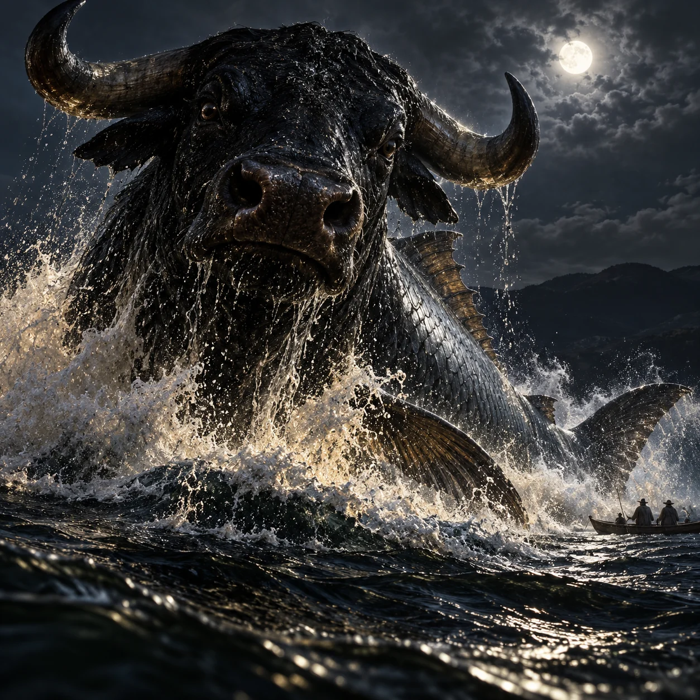
Fish variant with black ox-like head, not snake variant
Aura: Black ox-like head and whale-surpassing fish mass c03; emergence c07.
Audit ciri dan sumber
- [object Object]
- [object Object]
- [object Object]
Native dan 200px dilihat. Uji Sangar 7/7 ya: black ox head, fish fins/scales, emergence spray c07, dominant active threatening subject, no lettering or unrelated power.
Review sumberONE original square premium painterly cinematic Mitoloka illustration of the Monster of Lake Tota, the Muisca legendary aquatic creature.
ANATOMY: One monstrous fish, a BLACK OX-LIKE HEAD on a FISH BODY with fins and tail, larger than a whale; never an ordinary whale. One head, two eyes; broad bovine muzzle. [c03]
MOMENT: Burst up from the lake abyss toward the viewer, black ox head thrust close, massive fish body bending just beneath water. [c07]
POWER: Its documented emergence displaces dark lake water as heavy spray and waves; no elemental magic. [c07]
SCALE & CAMERA: Waterline extreme low angle; ox-like head fills upper two thirds, visible fish flank and dorsal fin; distant tiny wooden boat for the greater-than-whale scale [c03]
LIGHT & WEATHER: Single pale moon shaft, deep walnut-black shadows, silver-gold edge on water spray
SURFACE: Wet black hide on ox-like head, rough fish scales on body, naturally wet fins
SETTING: Lake Tota, Colombia, dark deep lake and remote shoreline [c02]
MOOD: Imposing legendary animal, confrontational, never cute or calm
HARD CONSTRAINTS: no text, lettering, pseudo-inscription, glyphs, logo, border, frame or watermark; no extra heads, limbs or fingers; no design borrowed from any film, game, anime or comic; fully opaque covering where human skin would be nude; no explicit gore; no generic glow aura, neon outline or energy ribbons. One square image, native resolution at least 1024x1024.
Moongarm
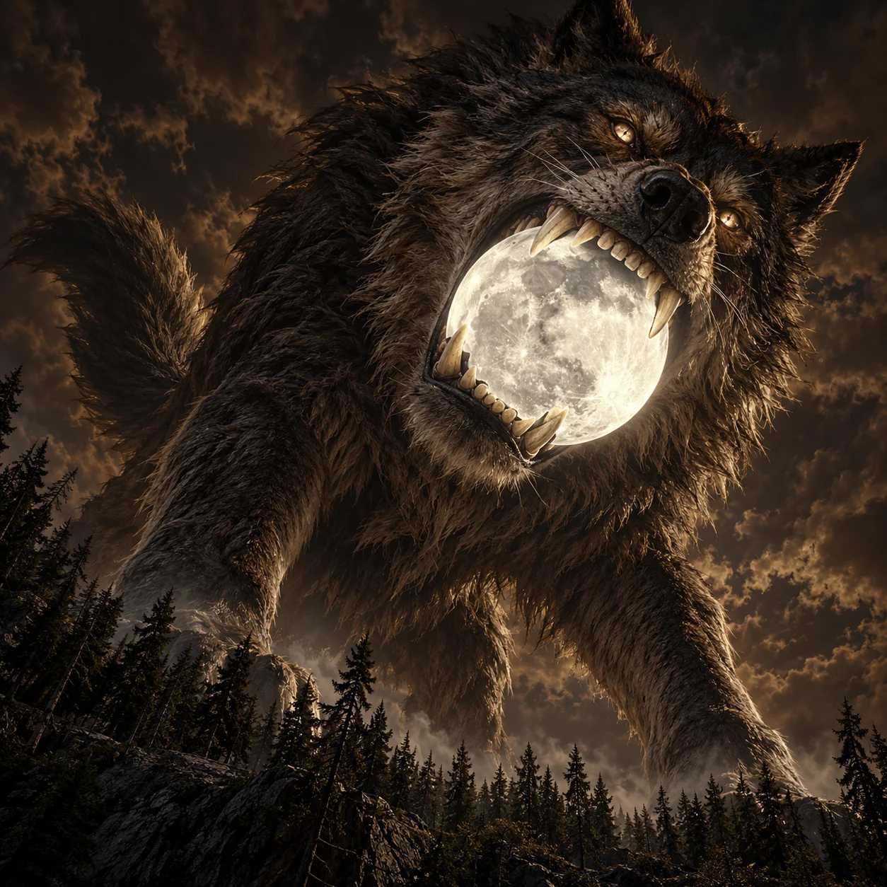
Giant wolf physically biting and swallowing moon
Aura: Most terrible wolf c02; active moon-devouring c04/c05.
Audit ciri dan sumber
- [object Object]
- [object Object]
- [object Object]
Native dan 200px dilihat. Uji Sangar 7/7 ya: giant wolf, one head, two eyes, bite touching lunar sphere c04/c05, forest below c03, powerful active confrontation, no gore/text/aura.
Review sumberONE original square premium painterly cinematic Mitoloka illustration of Moongarm, the most formidable moon-devouring wolf of Norse myth.
ANATOMY: One enormous wolf, one wolf head, two eyes, four legs and one tail; wild heavy fur, wolf teeth, no horns. [c02,c03,c04]
MOMENT: Clamp enormous jaws around the actual lunar disk, lunar surface visibly entering its mouth; glare down past the moon toward the viewer. [c04,c05]
POWER: Documented swallowing of the moon shown by physical bite contact, no magical beams, no blood or victims. [c04,c05]
SCALE & CAMERA: Extreme low angle, wolf muzzle and moon dominating frame, forest crowns tiny at lower edge; giant wolf race c03
LIGHT & WEATHER: Moon itself as single silver-white light source, dark warm fur and umber sky, deep shadow
SURFACE: Coarse matted dark fur, worn wolf teeth, cratered lunar sphere
SETTING: Jarnved Ironwood forest at lower edge, open night sky [c03]
MOOD: Terrifying mythic predator; powerful active bite
HARD CONSTRAINTS: no text, lettering, pseudo-inscription, glyphs, logo, border, frame or watermark; no extra heads, limbs or fingers; no design borrowed from any film, game, anime or comic; fully opaque covering where human skin would be nude; no explicit gore; no generic glow aura, neon outline or energy ribbons. One square image, native resolution at least 1024x1024.
Muckie
Menunggu gambar yang lolos audit
Muldjewangk
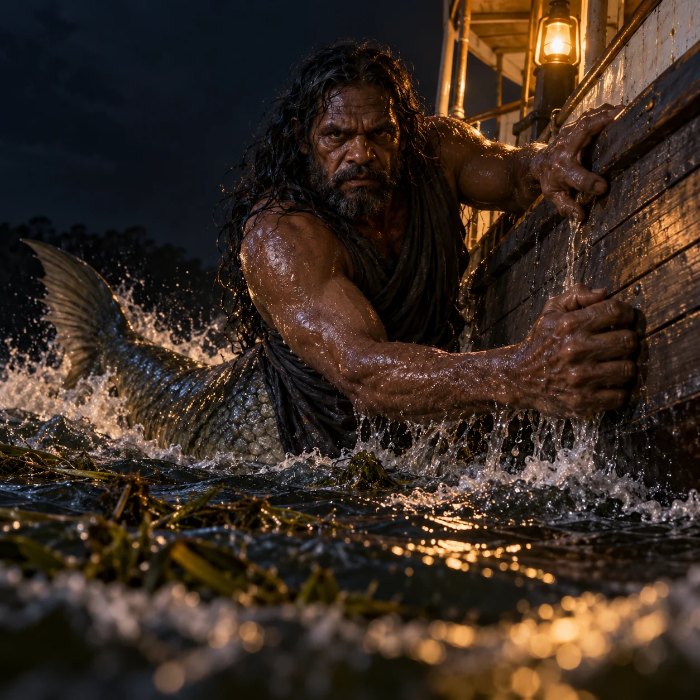
Half-fish half-man actively gripping a steamboat
Aura: Documented two great hands gripping hull c03 and half-fish anatomy c07.
Audit ciri dan sumber
- [object Object]
- [object Object]
- [object Object]
Native dan 200px dilihat. Uji Sangar 7/7 ya: one half-man half-fish c07, exactly two hands clamping hull c03, dominant face plus tail, active water displacement, respectful cautionary encounter; no text/aura/gore.
Review sumberONE original square premium painterly cinematic Mitoloka illustration of Muldjewangk or Mulyawonk, Ngarrindjeri half-fish half-man water spirit.
ANATOMY: One half-man half-fish being: upper torso and head humanlike, exactly TWO GREAT HANDS and arms, lower body a single fish tail; upper torso covered by plain dark opaque draped cloth. One head, two eyes. [c07,c03]
MOMENT: Rise beside a steamboat, two enormous hands CLAMPING its wooden hull, fish tail driving water behind; direct grave stare. [c03]
POWER: Hands gripping hull and physical lake spray; no red blisters, curses or invented magic. [c03]
SCALE & CAMERA: Extreme waterline low angle, face torso and both gripping hands fill frame; boat portion visible rather than tiny entire vessel
LIGHT & WEATHER: Single distant boat lantern as warm key, deep moonless shadows, amber highlights on spray
SURFACE: Wet skin, rough fish scales, saturated plain cloth, weathered timber
SETTING: Murray River, Lake Alexandrina, floating weed clumps partly around lower tail [c01,c05]
MOOD: Solemn powerful water spirit, culturally respectful, dangerous cautionary encounter
HARD CONSTRAINTS: no text, lettering, pseudo-inscription, glyphs, logo, border, frame or watermark; no extra heads, limbs or fingers; no design borrowed from any film, game, anime or comic; fully opaque covering where human skin would be nude; no explicit gore; no generic glow aura, neon outline or energy ribbons. One square image, native resolution at least 1024x1024.
Nagual
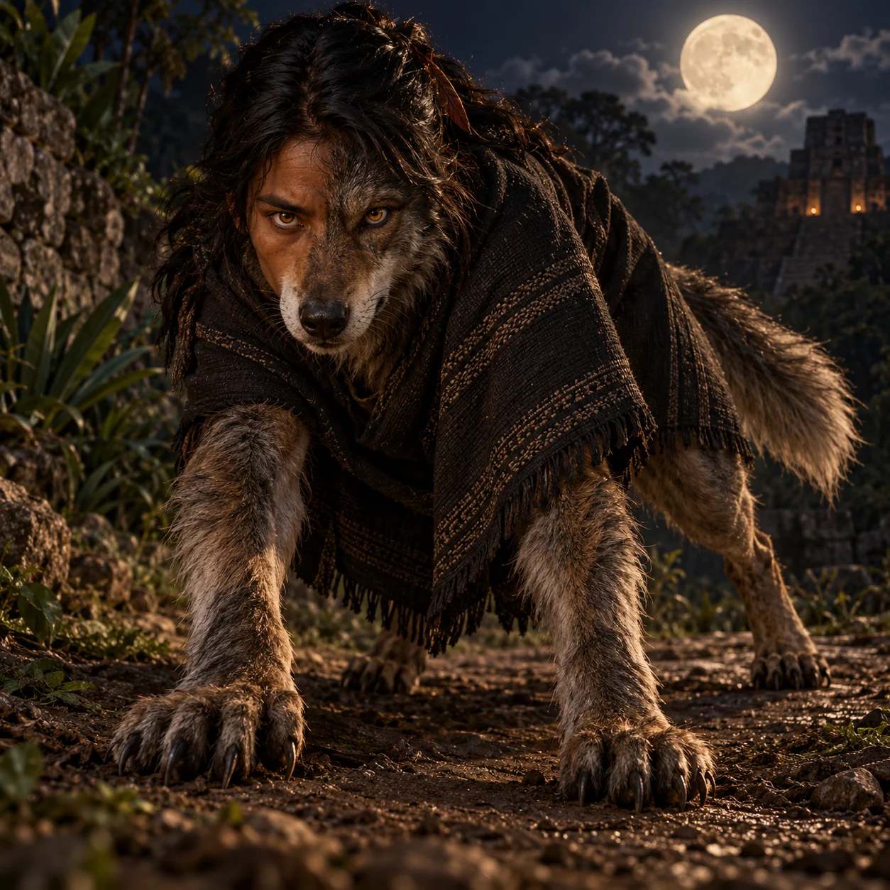
Protective nagual physically changing into wolf counterpart
Aura: Transformation c05 with community-protective reverence c12.
Audit ciri dan sumber
- [object Object]
- [object Object]
- [object Object]
Native dan 200px dilihat. Uji Sangar 7/7 ya: single continuous human-wolf transformation c05/c07, four limbs no doubled body, human face partly replaced by wolf muzzle, protective intent c12, forward bracing action, no text/aura/gore.
Review sumberONE original square premium painterly cinematic Mitoloka illustration of Nagual, a revered Mesoamerican human shapeshifter taking an animal counterpart.
ANATOMY: One figure in a single continuous PHYSICAL transition from fully clothed human to wolf: ONE head, two eyes, exactly four total limbs; wolf muzzle and fur replacing face, two forelimbs replacing human arms, two hind legs replacing legs, one emerging tail. No overlapping second body. Plain opaque dark woven mantle covers torso. [c05,c07]
MOMENT: Transform forward in a low braced stance, hands becoming wolf paws touching the earth, face becoming wolf muzzle while looking directly toward viewer. [c05]
POWER: Actual shapeshifting of body and fur, no ghost animal, aura, projection or trails. [c05]
SCALE & CAMERA: Close low angle, head and transforming forelimbs large; natural human/wolf scale, no giant claim
LIGHT & WEATHER: Single moonlit edge through night shade, warm umber-black palette
SURFACE: Rough wolf fur growing within human skin texture, unmarked woven cloth, dirt under paws
SETTING: Rural Mesoamerican night environment, earth path with vegetation [c02,c07]
MOOD: Revered and formidable protector c12, not evil witch; awe at transformation
HARD CONSTRAINTS: no text, lettering, pseudo-inscription, glyphs, logo, border, frame or watermark; no extra heads, limbs or fingers; no design borrowed from any film, game, anime or comic; fully opaque covering where human skin would be nude; no explicit gore; no generic glow aura, neon outline or energy ribbons. One square image, native resolution at least 1024x1024.
Nain Rouge
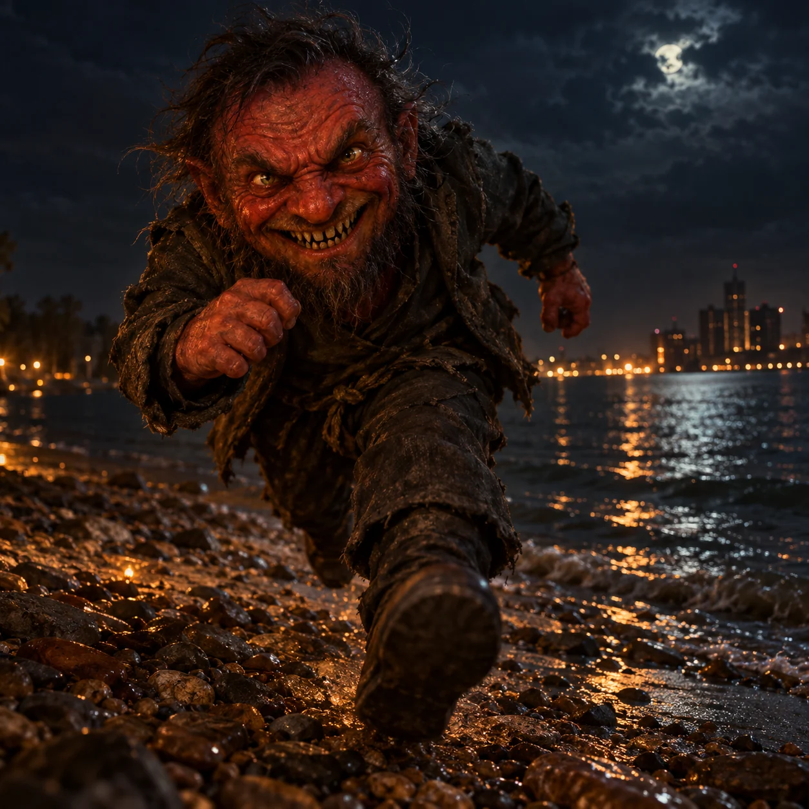
Red-faced sharp-toothed dwarf running and mocking
Aura: Red face c06 sharp teeth c07 and mocking shore-running c09/c11.
Audit ciri dan sumber
- [object Object]
- [object Object]
- [object Object]
Native dan 200px dilihat. Uji Sangar 7/7 ya: dwarf red face c06, pointed teeth c07, mocking running movement c09/c11, two arms/two legs, confrontational close view; no text/aura/gore or giant scaling.
Review sumberONE original square premium painterly cinematic Mitoloka illustration of Nain Rouge, the red dwarf presaging misfortune at Detroit.
ANATOMY: A single small uncanny dwarf with very RED FACE, TWO bright glistening eyes, grinning mouth with sharp pointed teeth. Exactly two arms and two legs. Plain opaque weathered dark clothing, no hat, no horns. [c06,c07]
MOMENT: Run across the shore directly toward the low viewer, one foot lifting, face twisted in a sharp mocking laugh, pointed teeth visible. [c09,c11]
POWER: No supernatural visual effect; misfortune is a presage, shown through threatening face and approach only [c01,c10]
SCALE & CAMERA: Extremely tight low-angle foreground portrait with foreshortened running body, normal dwarf size, no invented giant stature
LIGHT & WEATHER: Single low warm lantern reflection, deep night shadows, muted red face
SURFACE: Ruddy rough skin, jagged teeth, unmarked coarse cloth
SETTING: Detroit strait shore at night, beach stones behind [c04,c06,c11]
MOOD: Malignant if offended c08; uncanny dangerous grin, never cute
HARD CONSTRAINTS: no text, lettering, pseudo-inscription, glyphs, logo, border, frame or watermark; no extra heads, limbs or fingers; no design borrowed from any film, game, anime or comic; fully opaque covering where human skin would be nude; no explicit gore; no generic glow aura, neon outline or energy ribbons. One square image, native resolution at least 1024x1024.
Nandi bear
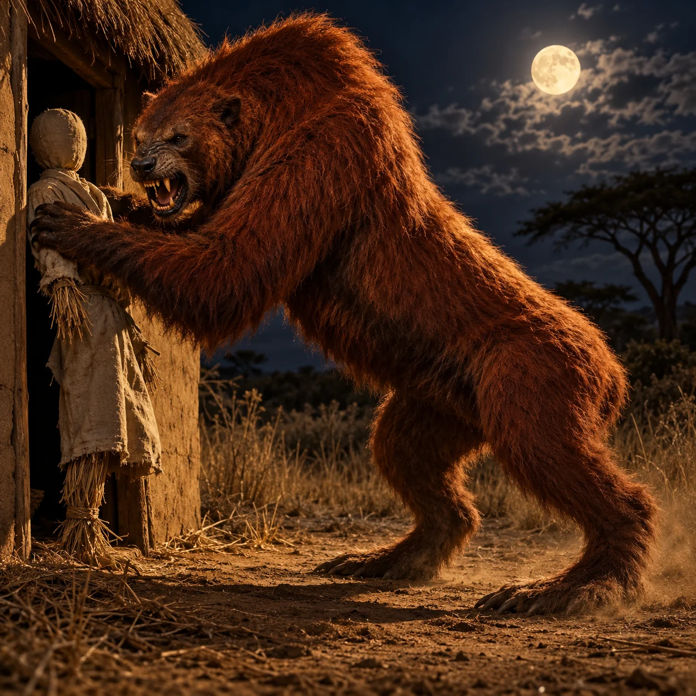
Unfamiliar reddish high-shouldered carnivore rearing at a hut-doorway dummy, steep sloping back and very long hind feet exposed in side view.
Aura: Menace comes from extraordinarily high shoulders and shaggy reddish long-footed anatomy c05/c06, nocturnal hind-leg attack c12, and hut-doorway lure encounter c14.
Audit ciri dan sumber
- [object Object]
- [object Object]
- [object Object]
- [object Object]
Native1254x1254 and200px inspected. Uji Sangar7/7 yes: creature dominates frame, nocturnal attack on doorway dummy immediately threatening at200px; extraordinarily high shoulder ridge slopes steeply toward much lower hips; very long hind feet, rust-red shaggy fur and rearing stance clearly exposed. One head/two eyes/four limbs; far forefoot partly occluded by dummy. Generic carnivore face reads neither ordinary grizzly nor ordinary hyena. No magic, gore, text, watermark or frame.
Review sumberONE original square premium painterly cinematic Mitoloka illustration of Nandi bear, the fierce nocturnal East African cryptid, caught ambushing the dummy man at a hut doorway.
ANATOMY: ONE powerful unfamiliar mammalian carnivore with one head, two eyes, four limbs. Its defining silhouette is EXTRAORDINARILY HIGH FRONT SHOULDERS forming a massive angular rise above the head, then a back descending in a very steep slope to MUCH LOWER small hindquarters. Render this high-shoulder/sloping-back profile unmistakably, with the whole torso in three-quarter SIDE VIEW. Dense shaggy reddish rust-red hair. VERY LONG FEET, elongated narrow furry feet with long soles rather than round bear paws; the two hind feet must both be fully visible planted on the ground. A fierce broad-jawed carnivore head with small indistinct ears: original unspecific mammal interpretation, do not copy a grizzly bear or any hyena. [nandi-bear-c05,nandi-bear-c06]
MOMENT: Rear onto its two bent hind legs and lean sharply forward to snatch a small faceless cloth dummy standing in a hut doorway; the two long forefeet reach toward the dummy while its snarling head turns three-quarter toward the viewer. Its low hips, huge raised front shoulders and downward-sloping back remain exposed across the frame. The action is an ambush, with no injured human. [nandi-bear-c12,nandi-bear-c14]
POWER: No documented supernatural power; danger comes from its fierce physical attack, visible teeth, looming shoulders, and dust disturbed by its planted elongated hind feet. [nandi-bear-c12,nandi-bear-c14]
SCALE & CAMERA: low ground-level camera from outside the hut, wide enough to show the entire shoulder-to-hip silhouette and all four limbs without cropping the long hind feet. Creature fills eighty percent of the square; hut doorway and dummy small at the edge as scale context. Fairly large animal, not a giant monster.
LIGHT & WEATHER: night, one strong raking amber moonlight source exposing the reddish shoulder ridge, entire back profile, and elongated feet; deep walnut shadows, dusty ground.
SURFACE: coarse tangled red hair with darker roots, long sparse hair around the feet, rough dry earthen hut walls, straw and dry savanna grass.
SETTING: hut doorway on the savannas of Kenya and Tanzania at night; doorway dummy recall the recorded lure account. [nandi-bear-c14,nandi-bear-c18,nandi-bear-c12]
MOOD: menacing, actively attacking, dangerous and imposing, never cute, calm or decorative.
HARD CONSTRAINTS: the extraordinary high forequarters and steeply sloped back and very long feet must remain obvious at thumbnail size. No ordinary bear, grizzly, hyena, wolf, gorilla, or werewolf. No humanoid hands. No added horns, wings, spikes or armor. No glowing eyes or magical effects. No scalping, brains, injury, blood or explicit gore. No text, lettering, logo, border, frame or watermark; no extra heads or limbs; no design borrowed from any film, game, anime or comic; no nudity; no generic glow aura, neon outline or energy ribbons. Native square resolution at least 1024x1024.
Nian
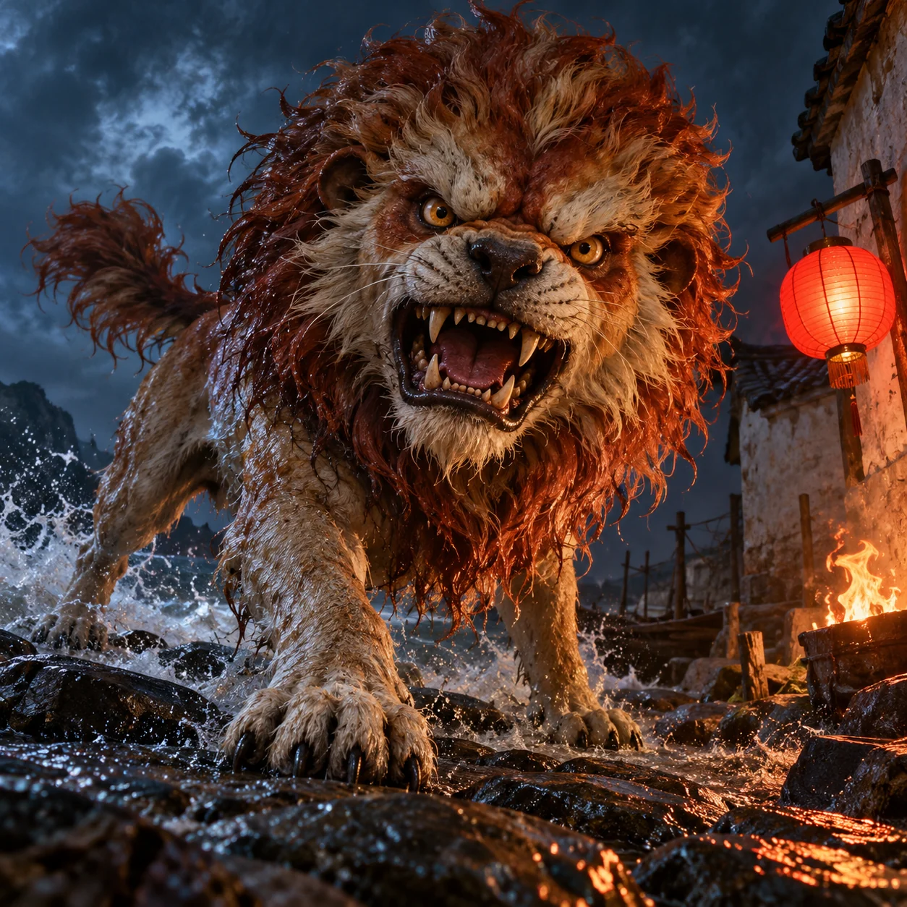
Flat-faced lion dog-body variant recoiling from red flame
Aura: Ferocious attack c03 and visible recoil from documented fears c09.
Audit ciri dan sumber
- [object Object]
- [object Object]
- [object Object]
Native dan 200px dilihat. Uji Sangar 7/7 ya: flat lion face on doglike quadruped body c04, no horns, sea emergence c03, bared teeth twisted stride beside red lantern and fire c09; no fire breath/text/aura; four limbs and one tail.
Review sumberONE original square premium painterly cinematic Mitoloka illustration of Nian, a ferocious beast of Chinese New Year tales.
ANATOMY: One original flat-faced LION HEAD on a DOG BODY, coarse lion mane, two eyes, four dog legs and one dog tail; NO horns in this chosen variant. [c04]
MOMENT: Bound up from dark shore and recoil with jaws bared from a red lantern and small natural fire at frame edge, twisted body still charging toward viewer. [c03,c09]
POWER: Fear of red and flames acts through physical recoil only; no elemental fire breath or magical explosions. [c09]
SCALE & CAMERA: Extreme low angle lion face dominant, dog torso and front paws visible in action, no unsupported gigantic scale
LIGHT & WEATHER: Single natural flame at edge as warm light, deep water shadows, one plain red lantern without lettering
SURFACE: Wet rough fur and mane, worn teeth, weathered shoreline stones
SETTING: Chinese sea shore beside simple unmarked village wall [c01,c07]
MOOD: Ferocious threatened beast, dangerous and active
HARD CONSTRAINTS: no text, lettering, pseudo-inscription, glyphs, logo, border, frame or watermark; no extra heads, limbs or fingers; no design borrowed from any film, game, anime or comic; fully opaque covering where human skin would be nude; no explicit gore; no generic glow aura, neon outline or energy ribbons. One square image, native resolution at least 1024x1024.
Nüba
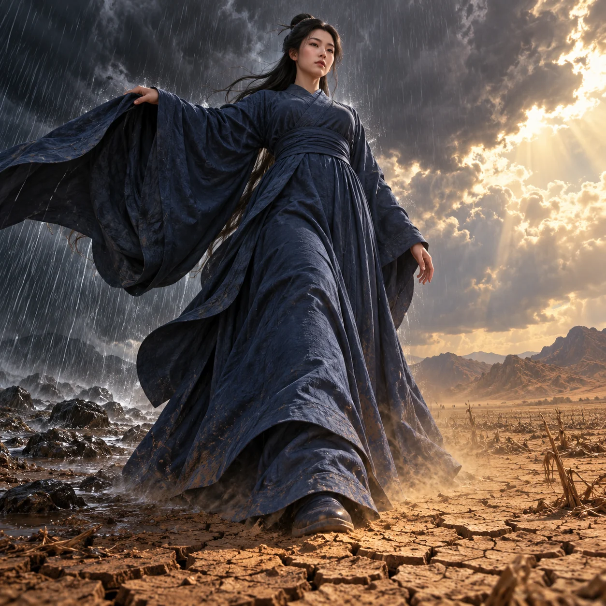
Dark-blue-clothed Shanhaijing goddess stopping rain
Aura: Drought and cessation of rain c04/c07/c08, sacred authority c01.
Audit ciri dan sumber
- [object Object]
- [object Object]
- [object Object]
Native dan 200px dilihat. Uji Sangar 7/7 ya: monumental editorial sacred allegory, dark-blue opaque robes c05/c07, active step and sleeve sweep, rainfall stops beside parched earth c04/c07/c08, tiny plants convey sacred scale; two hands one head, no text/aura/gore; solemn not evil.
Review sumberONE original square premium painterly cinematic Mitoloka illustration of Nüba, the Chinese goddess whose presence ends rain and brings drought.
ANATOMY: ONE female deity, one head two eyes, two arms and two legs, FULLY OPAQUE DARK-BLUE LONG ROBES covering entire body; plain unmarked garment. Shanhaijing clothed variant, never nude. [c05,c07]
MOMENT: Descend forward through the last rain while sweeping one sleeve aside; rain curtain ends at her approach and dry earth appears under her step. [c07,c10]
POWER: Documented stopping rain and drought: dark rain behind, dry cracked soil foreground, no fire, no energy aura. [c04,c07,c08]
SCALE & CAMERA: Extreme low angle; monumental presentation as explicit respectful EDITORIAL ALLEGORY of deity, not a factual claim of body size; figure fills frame, small earth ridges below
LIGHT & WEATHER: One gap of warm sunlight after stopped storm, severe shadow, natural drifting dry dust
SURFACE: Heavy dark-blue woven robes, parched cracked soil, residual wet stones behind
SETTING: Northern earth north of Red River, newly drought-stricken field [c08,c10]
MOOD: Respectful sacred awe at goddess drought power, solemn authority, never evil or monstrous
HARD CONSTRAINTS: no text, lettering, pseudo-inscription, glyphs, logo, border, frame or watermark; no extra heads, limbs or fingers; no design borrowed from any film, game, anime or comic; fully opaque covering where human skin would be nude; no explicit gore; no generic glow aura, neon outline or energy ribbons. One square image, native resolution at least 1024x1024.
Okuri suzume
Menunggu gambar yang lolos audit
Orang Bunian
Menunggu gambar yang lolos audit
Orang Mawas
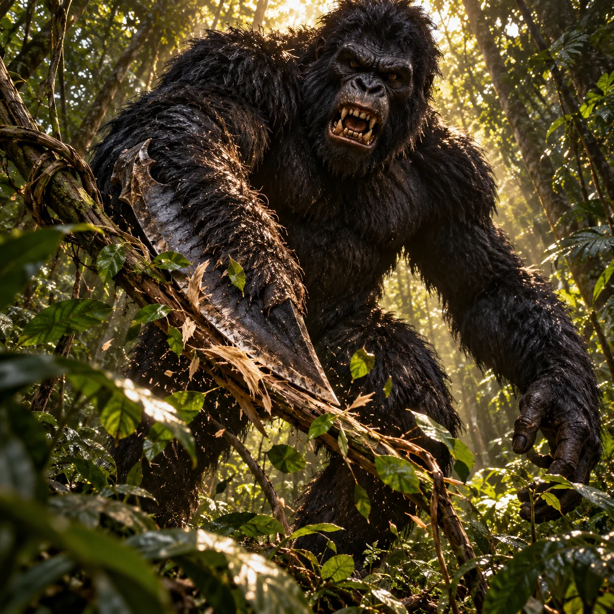
Tall black ape with snaggle teeth and integrated forearm woodknife
Aura: Documented stature c02, snaggle teeth c03 and woodknife cutting c07.
Audit ciri dan sumber
- [object Object]
- [object Object]
- [object Object]
- [object Object]
Native dan 200px dilihat. Uji Sangar 7/7 ya: black-furred bipedal great ape c02/c06, irregular teeth c03, two arms/two legs, integrated forearm blade cuts undergrowth c07, active dominant threat; no held weapon, text, aura, gore or duplicated anatomy.
Review sumberONE original square premium painterly cinematic Mitoloka illustration of Orang Mawas, great black-furred bipedal ape of Malay folklore.
ANATOMY: One 2.4–3 metre tall BLACK-FURRED manlike ape, one head two eyes, TWO arms and TWO legs, no tail; irregular widely gapped snaggle teeth clearly visible. A woodknife BLADE replaces forearm bone in traditional variant, shown as integrated hard blade edge along outer forearm, NOT held weapon, no extra limb. [c02,c03,c07]
MOMENT: Stride through undergrowth and cut a thick vine with integrated forearm blade, face turned down toward viewer and mouth open showing snaggle teeth. [c07]
POWER: Physical undergrowth cutting with documented forearm blade, leaves and cut vine falling; no magic [c07]
SCALE & CAMERA: Extreme low jungle viewpoint, towering 3m ape face shoulders and forearms fill frame, small saplings indicate documented scale c02
LIGHT & WEATHER: Single warm shaft through night canopy, dense black shadows
SURFACE: Dense wet black fur, rough dark forearm blade, torn leaves
SETTING: Johor jungle, dense undergrowth [c01,c07]
MOOD: Formidable folklore ape, direct confrontation not ordinary calm gorilla
HARD CONSTRAINTS: no text, lettering, pseudo-inscription, glyphs, logo, border, frame or watermark; no extra heads, limbs or fingers; no design borrowed from any film, game, anime or comic; fully opaque covering where human skin would be nude; no explicit gore; no generic glow aura, neon outline or energy ribbons. One square image, native resolution at least 1024x1024.
Oshira-sama
Menunggu gambar yang lolos audit
Otomitl
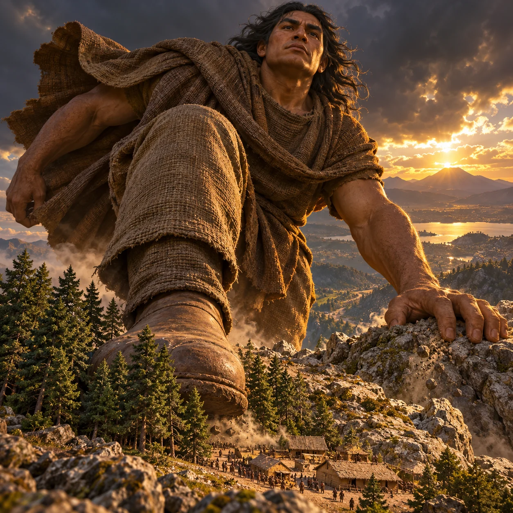
Colossal fully clothed Otomitl climbs a mountain, dwarfing complete pines immediately around his planted foot and an adjacent village with people at his feet.
Aura: Sourced giant identity c01 becomes undeniable through adjacent trees and settlement at feet, while c02 mountain climb supplies action.
Audit ciri dan sumber
- [object Object]
- [object Object]
- [object Object]
Native and 200px personally inspected, all seven Sangar checks yes. Giant c01 scale unmistakable: planted foot stands among complete nearby pine trees, a whole village and tiny people immediately at the foot; scale references lie on adjacent crest rather than distant valley only. Active upward mountain climb c02 with raised knee and hand bracing crest, one head/two eyes/two arms/two legs, plain opaque tunic/mantle/trousers/footwear editorial. Physical dust only, no magic or mountain creation. Respectful awe; no ordinary-man reading at 200px, text/glyphs, borrowed design, gore or nudity. Historical tool-native and rejected PNG hashes verified unchanged; replacement independent and atomic.
Review sumberONE original square premium painterly cinematic Mitoloka illustration of Otomitl, the primordial giant son of Iztac-Mixcoatl and Tlaltecuhtli climbing the mountains near Mexico.
ANATOMY: exactly one fully human-form male GIANT with one head, two eyes, two arms and two legs; completely opaque plain earth-brown woven tunic, mantle, trousers and simple closed leather foot coverings; no horns, feathers, crown, ritual glyphs, weapons or extra anatomy [otomitl-c01, otomitl-c03].
MOMENT: climb directly upward toward the viewer, plant one vast foot onto the mountain crest beside a whole stand of mature pine trees, brace one immense hand over the rocky hill crest, raise the opposite knee and pull the plain mantle in the wind [otomitl-c02].
POWER: giant size and physical mountain climb only; loose rock and dust shift at hand and foot contact, no creation of mountains, elemental attacks or magical glow [otomitl-c01, otomitl-c02].
SCALE & CAMERA: extreme low angle from the SAME rock platform as his planted foot; show giant from feet to head dominating square. Place several COMPLETE mature pine trees IMMEDIATELY BESIDE and touching his planted foot on the SAME ground plane, their tallest treetops reaching only his ankle. The nearby entire village with tiny people must cluster directly at that foot, not far in the valley. His foot must be visibly wider than the whole nearby pine grove. Unmistakable colossal scale supported by giant identity, never an ordinary man with merely distant scenery.
LIGHT & WEATHER: one late golden sun slit under dark cloud, walnut shadows, sharp rim light, contact dust.
SURFACE: unmarked coarse heavy woven cloth, weathered rock, mature pine bark and branches, natural human face, worn plain leather.
SETTING: mountain crest and settlements around Mexico, corresponding to his mountain climb and settlement founding; the adjacent mature pines and simple village roof designs are editorial scale references, not claimed botanical or architectural details [otomitl-c02, otomitl-c07].
MOOD: awe-inspiring primordial giant founder, respectful and commanding; never evil, cute, calm or decorative.
HARD CONSTRAINTS: adjacent FULL pine trees and nearby village at his planted foot must prove giant scale at 200 pixels; no tiny distant background offered as the only scale evidence. No text, lettering, logo, border, frame or watermark; no extra heads, limbs or fingers; no design borrowed from any film, game, anime or comic; no nudity or explicit gore; no generic glow aura, neon outline or energy ribbons; no tattoos, glyphs or pseudo-text.
Pallas (Giant)
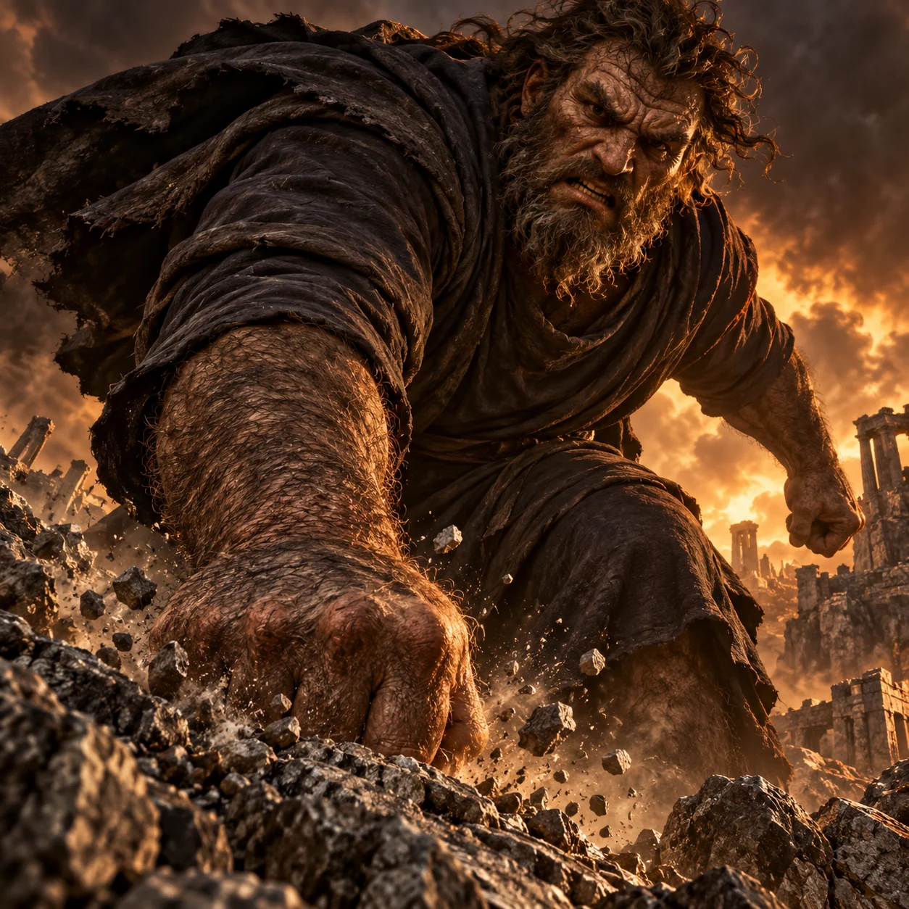
Goat-skinned humanlike giant in combat before flaying
Aura: Giant identity c01 and goatish skin c03 with battle c02.
Audit ciri dan sumber
- [object Object]
- [object Object]
- [object Object]
Native dan 200px dilihat. Uji Sangar 7/7 ya: giant c01 with coarse goatish hide c03 on arms/face, no goat horns/hooves, active striking fist and loose rocks c02, imposing low camera; one head two arms two legs, opaque attire, no text/magic/flaying/gore.
Review sumberONE original square premium painterly cinematic Mitoloka illustration of Pallas, the goat-skinned Gigante opposing the Olympian gods.
ANATOMY: One MALE GIANT, ONE human head two eyes, two arms and two legs; skin visible at face and hands has GOATLIKE coarse hair and rough hide, no added goat horns or hooves; opaque plain dark mantle and tunic. [c01,c03]
MOMENT: Lunge over battlefield rocks toward viewer, one broad fist driving down against a rock ledge, fierce face close and goatish skin texture clearly readable. [c02]
POWER: Physical giant battle motion only, loose stone and dust at hand contact; no lightning, flame, magic, flaying or gore. [c02]
SCALE & CAMERA: Extreme low angle; giant fills square, tiny rocks and distant ruined stone suggest giant documented c01 scale
LIGHT & WEATHER: Single amber battlefield fire off-frame illuminates edge, deep umber-black shadows, no fire emitted by subject
SURFACE: Coarse goat hair embedded over rugged skin, unmarked plain fabric, rough rock
SETTING: Gigantomachy battlefield, rocky ground [c02]
MOOD: Fierce mythic battle opponent, dangerous and imposing
HARD CONSTRAINTS: no text, lettering, pseudo-inscription, glyphs, logo, border, frame or watermark; no extra heads, limbs or fingers; no design borrowed from any film, game, anime or comic; fully opaque covering where human skin would be nude; no explicit gore; no generic glow aura, neon outline or energy ribbons. One square image, native resolution at least 1024x1024.
Pincoy
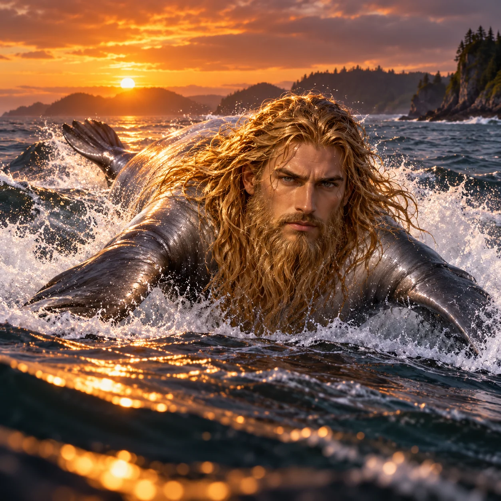
Silver-seal body variant with masculine human face and golden mane
Aura: Hybrid human face on seal c06 and extraordinary swimming c13, severe guardian c07.
Audit ciri dan sumber
- [object Object]
- [object Object]
- [object Object]
Native dan 200px dilihat. Uji Sangar 7/7 ya: large silver seal body and handsome masculine human face golden mane c06, two foreflippers rear flippers behind, no human limbs/fish tail, forceful speed wake c13, severe guardian stare c07; no text/aura/gore, respectful awe.
Review sumberONE original square premium painterly cinematic Mitoloka illustration of Pincoy, the handsome male sea spirit and strict maritime guardian of Chiloé.
ANATOMY: ONE large SILVER SEAL BODY with a handsome masculine HUMAN FACE and thick LONG GOLDEN MANE, two eyes, exactly TWO foreflippers and TWO rear flippers; NO human arms or legs, no fish tail. [c06]
MOMENT: Swim toward viewer with extraordinary speed, silver seal body driving a deep wake and foreflippers cutting water, serious watchful human gaze. [c13,c07]
POWER: Extraordinary swimming speed creates real white water and spray; silver shine is reflected light on body, no silver energy ray or aura. [c13]
SCALE & CAMERA: Extreme low waterline angle, handsome human face and golden mane dominant, seal body and flippers clearly visible behind; large seal scale c06
LIGHT & WEATHER: Single warm sunset break above dark sea, silver reflections and walnut water
SURFACE: Slick silver-gray seal hide, heavy wet golden hair, churning water
SETTING: Sea around Chiloé, distant island shore [c01,c13]
MOOD: Respectful awe at severe administrator and guardian c07, not evil and not ordinary seal
HARD CONSTRAINTS: no text, lettering, pseudo-inscription, glyphs, logo, border, frame or watermark; no extra heads, limbs or fingers; no design borrowed from any film, game, anime or comic; fully opaque covering where human skin would be nude; no explicit gore; no generic glow aura, neon outline or energy ribbons. One square image, native resolution at least 1024x1024.